atari++ - a versatile extended emulator of Atari 8 bit machines
atari++ [-option value [-option value]...]
atari++ is an emulator for (now rather aged) Atari 8 bit computers. It emulates the Atari800, Atari400, the 800XL and 600XL, the 65XE and 130XE and the Atari 5200 Game Console. The emulation is cycle-precise, that is “on the fly” modifications of chip registers will be visible on the screen immediately, emulating even programs using horizontal kernel tricks correctly.
atari++ includes also emulation of various disk drive models, capable of single, enhanced and double density and adds some frequent extensions found in third-party hardware. The disk drive emulation supports disk images in the xfd and atr file format, and is also capable of loading binary load files (so called exe files) by emulating a mini Game-DOS whose disk layout is similar to Dos 2.0S. Most exe files wouldn’t require to be loaded from a regular DOS therefore. As a bonus, the emulation also includes Matthias Reichl’s “atarisio” interface, allowing you to connect a real 1050 or 810 drive to the emulating PC by means of a 1050-to-PC or ProSystem cable.
In case no Atari ROM image is available, atari++ emulates a 800XL/130XE ROM image compatible to the Atari ROM that is sufficient to run almost all programs. Basic programs are supported by the built-in Basic emulation that is also compatible to the native Basic ROM.
Emulation of printers is included as well. Print-out text is forwarded to the standard printer tool, which defaults to the lpr printer front-end. The print-out command can be adjusted by means of the command line options and the configuration files (see below).
Additional features include emulation of the 850 serial/parallel interface box, emulation of the tape drive, a screen-snapshot, a complete machine state save and load feature that allows you to stop and replay a game in a later session and sound support by the Open Sound System (Oss) or Alsa sound drivers.
Furthermore, to aid the developer, a simple system monitor using a curses terminal front-end has been integrated into the emulator. It offers several features not available on the real hardware, as single stepping thru programs and setting breakpoints, even in ROM code.
Graphics output is either emulated within an X11 window, or - if available - with the SDL library. As last resort, and for special applications, some ports provide a curses front-end that renders its output in textual form on a console. Alternatively, the emulator can also be instructed to read and write input to the operating system editor device directly to and from the console, i.e. the standard input and output streams of the program. This is not implemented as a new type of front-end, but rather as an operating system patch.
Quite untypical for unixoid systems, the atari++ options are not case sensitive, upper and lower case won’t matter. Furthermore, the order of the command line arguments doesn’t matter as well. The following options are supported:
|
--help |
prints all available options to the console. NOTE: Due to the dynamic build-up of the atari++ components, the options these components become only available if the corresponding component is activated as well. E.g, you won’t see the X11 options with the SDL front-end activated. | ||
|
-h |
similar to the above. |
All following options are of four kinds: Numerical options taking exactly one number as argument. They typically accept only numbers within a limited range. Boolean options, taking the strings on yes or true as positive and off , no or false as negative choices and string options that take either a file or a string as value. Last but not least, selective options that pick one out of several possible, mutually exclusive choices.
On the Fly
Configuration
Atari++ provides a quick and a complete menu to setup or
modify its configuration on the fly. For the quick menu,
press and hold the left mouse button within the emulator
window, and pick an apropriate option from the menu on the
screen. This menu provides the most-used options, namely to
load and boot a disk, to pick a cartridge or to reset the
emulated Atari.
The full menu is either available as an option within the quick menu, or by pressing the F1 key on the keyboard. The options presented there are identical to the options listed below.
NOTE: The quick menu is not available in case the mouse has been arbitrated to emulate a joystick or any other kind of input device. You’d need to enter the full menu by the F1 key to adjust the configuration in this case.
Global
Options
This set of options does not belong to a specific part of
the emulation core, but rather influence the emulator as a
whole.
-h or --help
prints out the list of currently available options. This list does, however, depend on the current configuration of the file as options for modules that are currently not in use will not be shown on this list. For example, if your .atari++.conf file selects the X11 frontend for graphics output, the options for the SDL graphics support will not be shown. Unlike all other options, this option does not take an argument.
-config filename
Load an alternative configuration file into the emulator. This will override the options from all other configuration files, but will be overridden by the command line arguments itself.
-state filename
Load a machine state snapshot file. This restores the machine state of a previous atari++ session by re-installing the memory conents and all hardware register settings of the previous session. For more details about the snapshot feature, see the SNAPSHOT FILES section below.
Machine Type
Options
The following options modify the overall emulation process,
picks the hardware to be emulated and the frontend how to
perform graphics and sound output.
-machine 800|1200|XL|XE|5200
Sets the type of machine to emulate. This is a meta-option that sets suitable defaults for several other options, still allowing to override these defaults with further commands. Hence, you’d be still able to run an Atari XL machine with the Os of the Atari 800. The following models are available: 800 emulates the Atari 800 and its derivative, the Atari 400. 1200 emulates the Atari 1200XL. This is almost identical to the 800XL, except that the default ROM image is different. XL emulates the Atari 800XL, the 600XL and the 65XE. XE emulates the Atari 130XE with a total of 128KByte memory. Last but not least, the 5200 argument selects the emulation of the 5200 game console.
-frontend X11|SDL|CURSES|NONE
Defines which graphical front-end should be used. Currently, the X11 the CURSES and the SDL front-ends are supported. NONE is a dummy front-end without any graphical or textual output that can be used for playing music or related tasks. The installedevice option is suggested to get minimal support from the console using only stream-I/O. Note this type of redirection is not a front-end option, but rather an optional operating system patch, see OS Options below.
The X11 interface is only available for Unix based operating systems, most notably Linux, while the SDL interface is currently available on most ports. The latter is also able to run in a full-screen mode that is more suitable for gameplay. Typically, the SDL front-end provides better performance unless you need to scale up the output with the -pixelwidth or -pixelheight options. Then, X11 performs noticeably better. The CURSES front-end requires only a terminal for rendering, but its graphics capabilities are rather limited. Specifically, it is only able to emulate text-based graphics modes and expects the built-in font to render the output. The keyboard mapping for the CURSES output is also slightly different, see the CURSES section for details.
-sound HQOSS|OSS|WAV|SDL|ALSA|DIRECTX
Sets the audio front-end used to generate audio output. For the OSS and HQOSS front-ends, an Open Sound System compatible driver is required, or no sound whatsoever will be available. Sound synthesis will be very close to the real sound output and will be at good quality, though some CPU power is required to guarantee continuous output without dropouts. In general, the HQOSS driver is preferably since it requires less precise implementations of the Oss standard and provides excellent quality for synthesized speech.
The main intention of the WAV front-end is to record the sound output as sampled sound in a .wav encoded file in optimum quality. To allow you to listen to in-game sounds, this front-end also offers a “play-back” option that also generates sound output thru an OSS compatible sound output, though this output is of less quality than that of the dedicated HQOSS module. Even though the play-back sound may contain some “blips” or drop-outs, the quality of the recorded audio within the .wav file will be perfect and very close to the original.
The SDL audio generation comes close in quality to that of the HQOSS driver, though it is more likely to generate drop-outs for highly loaded systems. SDL is the best in portability as SDL exists on a variety of systems. The SDL driver also emulates software speech correctly.
The DIRECTX driver is obviously available only for win32 compilations and uses the DirectSound interface of the DirectX system. This is the prefered sound system under Windows as it offers lowest latency at best quality.
Finally, the ALSA front-end uses the state of the art ALSA sound drivers for linux and provides optimal sound quality at minimal CPU load. It provides similar or better quality than the HQOSS front-end at less complexity, but it requires ALSA support, nowadays almost universally available.
-monitoroncrash bool
If this boolean option is enabled, then the emulator enters automatically the built-in monitor in case the 6502 CPU crashes due to a corrupt program. Note that these crashes are not due to bugs in the emulator, but rather due to flaws in the emulated program, i.e. a “real” Atari would have crashed in the same situation. If this option is disabled, then a warning gets printed and the user menu is entered. It is then up to you to either reset the emulation or to launch the monitor manually. This option defaults to false ,i.e. the monitor is not entered by itself.
For details about the system monitor, see the MONITOR section below.
-acceptlicence bool
If enabled, then it is understood that you read and agreed to the licence conditions under which Atari++ is delivered, and the licence conditions are no longer presented on startup.
-stereopokey bool
Toggles the “dual Pokey” hardware hack emulation. This hardware hack installs a second Pokey at base address $d210 into the system, allowing stereo sound emulation. Atari++ provides then a second Pokey chip named “ExtraPokey” that otherwise takes the same configuration arguments than the first Pokey does, though this second chip is not connected to the serial output and the keyboard.
NOTE: The second Pokey chip is fully functional and also provides interrupts. Since the Atari Os is not aware of this chip, it cannot handle these interrupts. Thus, programs might crash if interrupts of this extra chip are erraneously enabled. This is not the fault of the emulator, a real system would crash under the same circumstances.
-ignoreerrors bool
instructs the emulator to ignore all error messages and to continue operations as if the error requester has been closed by pressing “Cancel”.
-ignorewarnings bool
similar to the above option, will suppress all warning requesters as if the user accepted the warning.
CPU
Options
The following options control the emulation of the 6502 CPU:
-traceonreset bool
This boolean option is useful for debugging. If enabled with the on argument, the CPU enters trace mode on a reset, entering the build-in monitor immediately.
-traceinterrupts bool
Another debugging related option. If this is enabled, instruction stepping will also step into interrupt routines as soon as an interrupt gets detected. This might cause some confusion because surprisingly the 6502 CPU will continue execution from a completely different place, though it is helpful to find bugs in display list interrupts.
-cputype 6502|WD65C02
Selects the CPU type that is emulated. The WD65C02 offers a couple of addtional addressing modes and instructions that are supported by a couple of products, e.g. the Mac/65 assembler cartridge.
GTIA
Options
The following options modify the emulation process of the
video signal generator, the Graphics Television Interface
Adaptor chip:
-videomode PAL|NTSC
Defines whether the emulated GTIA should either identify itself as PAL or as NTSC chip. Some games read this value and modify their timing accordingly. This option also changes the color map GTIA sends to the front-end as colors differ slightly between the PAL and the NTSC version of GTIA.
-ChipGeneration CTIA|GTIA|XLGTIA
Selects the chip generation to emulate. CTIA selects the old first generation used in some very early 800 and 400 models. This chip did not provide the special 16 hue/16 luminance and 8 color modes, BASIC modes 9 to 11. GTIA selects the second generation, used in most 800 and 400 models, and XLGTIA the third generation in the XL series. The last two chips do actually not differ, only the surrounding analog circuits change the color artifacts slightly, which is the only noticable difference between them.
-artifacts bool
This boolean option controls whether GTIA should emulate color artifacts that are caused by video system. If set to on , the video rendering will detect hi-lo and lo-hi transitions for high-resolution graphics and text mode and will generate pseudo-colors similar to a real TV. These artifacts are limited to NTSC systems for the real hardware and are not as effective nor very visible for the PAL hardware; the emulator, however, displays them regardless of the emulated video mode. Some games require this setting to look properly. If set to off , artifact generation is disabled as for a higher quality monitor or for the PAL video system. This also makes text more readable and less blurry, it also speeds up the emulation process somewhat and is better suited for text-oriented software.
-palcolorblur bool
enables emulation of a feature of the PAL video system standard that can be used to create additional colors by mixing. If two adjacent horizontal lines on top of each other share the same intensity but have a different hue, then the mixture of the colors appears instead of two separate colors. This option is computationally a bit complex and requires a true color display, i.e. a color depth of 24 bit to be effective.
-antiflicker bool
enables the Atari++ flicker fixer. Some programs create additional colors by quickly altering the colors forth and back, causing the mixture of the colors due to the slowness of the TV screen. PC monitors are typically much faster, causing an anoying flicker for these programs. This switch enables a flicker-fixer that mixes the colors already in the GTIA display generation at the price of a higher complexity. This option also requires a true-color display, i.e. a bit depth of 24 bit.
-playerpositiondelay 0..32
this setting controls the number of half color-clocks required by GTIA to detect any change of the player/missile horizontal position register. It is the minimal screen distance in half color-clocks after writing to the horizontal position register until the change becomes effective. The default for this value is 12, i.e. it takes 12/4 = 3 CPU clocks before a horizontal adjustment is recognized.
-playerresizedelay 0..32
this controls, similar to the above, the internal GTIA propagation delay until a change of a player/missile size register becomes effective, and thus the distance in screen hires pixels from the modification to the position where the change becomes visible. The default is six half color-clocks.
-playerreshapedelay 0..32
quite similar again, this setting controls the propagation delay for player shape changes, i.e. how long it takes for a write to the P/M graphics register to propagate to the output logic of GTIA. If the write comes too late, the shape change will become visible only on the next scanline - unless GTIA fetches the data through the ANTIC DMA, of course.
-colormapname filename
requires a filename to a color map to be used instead of the default PAL or NTSC color map. The color map file must be exactly 768 bytes long and contains for each Atari color a red, green and blue color triple, eight bits per channel.
-playertrigger.0 all|players|missiles|none
The first out of four otherwise identical options sets the ability of player zero to generate collisions with other objects on the screen. Note that this does not change the ability of player zero to detect collisions itself, though. It just removes the ability of other players or missiles to collide with it.
If this option is set to all, then player zero can create collisions with all other objects, for the players setting, only collisions with other players are generated and missiles never see any collisions with player zero. For the missiles setting, the situation is reversed and only missiles can detect collisions to player zero. Finally, for the none argument, player zero generates no collisions at all.
-playertrigger.1 all|players|missiles|none
works similar to the above except that it changes the ability of player one to generate collisions.
-playertrigger.2 all|players|missiles|none
changes the abilities of player two and, finally,
-playertrigger.3 all|players|missiles|none
modifies the collision abilities of player three.
Note that there are no options to modify the collision abilities of a missile since it has none in the real hardware. A missile can never create a collision with a player itself, or any other object. Rather, the situation is somewhat reversed from the expected logic: A player creates a collision to a missile, and hence, its ability to collide with missiles must be turned off to avoid detection of player-missile collisions.
-playfieldtrigger.0 all|players|missiles|none
Modifies the abilities of playfield zero, i.e. the first foreground color, to generate collisions to other objects. Similar to the above set of four options, playfields can be allowed to generate collisions to all objects, players only, missiles only or no objects at all.
-playfieldtrigger.1
Triggers the ability of playfield one to generate collisions; otherwise, similar to the above.
-playfieldtrigger.2
The same again for playfield two.
-playfieldtrigger.3
the same once again for playfield three.
ANTIC
Options
The following options control the DMA controller and the
playfield graphics generator chip:
-videomode PAL|NTSC
This option is intentionally identical to the GTIA option of the same name and controls the video system ANTIC should emulate. As for ANTIC, this switch controls the height of the video output. For PAL , a total of 312 lines is generated, and for NTSC , only 262 lines of output are displayed. Note that not all lines are available for graphics as the vertical retrace takes up some of them.
POKEY
Options
The next set of options influences the sound generation. For
sound output, the Open Sound System driver for your
sound card, more specifically, /dev/dsp must be
available. Alternatively, sound output can be written into a
.wav file and replayed later by a suitable tool, e.g.
XMMS. Alternative sound outputs are SDL or
Alsa , depending on their availibility. See the
Machine Settings section for more details.
The following set of switches will not change the output of the sound, but rather the emulation of the POKEY chip generating the audio signal that is further processed by the OSS module described below.
NOTE: If
the “stereopokey” emulation is enabled, a second
set of Pokey control options appears under the topic
“extrapokey”. This set is identical to the set
described here.
-volume 0..300
Controls the overall volume of the POKEY output in percent compared to normal output. 300% is loudest and 0 disables the output. The default is 100%.
-gamma 50..150
Controls the output linearity of the POKEY D/A converter in percent. 100% is a perfectly linear output (provided the sound card output is linear). Values smaller than 100% cause sublinear behaivour (high amplitudes appear smaller than they should), values higher than 100% cause superlinear characteristics (high amplitudes are louder than they should). Real pokey chips typically show sublinear characteristics with a gamma value around 70% to 80%.
-videomode PAL|NTSC
Even though Pokey is not a video interface circuit, its timing is controlled by the system base frequency which is related to the video mode. This option controls whether Pokey should find itself in a PAL or NTSC system; it changes the audio base frequencies slightly.
-siosound bool
Enables or disables the serial transfer sound, provided the siopatch is not enabled and bypasses hardware driven serial i/o. This option enables a more complete Pokey emulation by also taking care of the serial transfer modes for generating sound. Thus, you get the very unique “Atari sound effects” for all kinds of disk or tape access.
-cycleprecise bool
Controls wether the Pokey emulation works cycle-precise, that is, whether pokey interrupts and potentiometer registers are are updated and queried on a cycle by cycle basis. This allows a more precise emulation, though it also requires more computing power.
-filterconstant 0..1024
controls the time constant for an optional high-pass filter that is applied to the audio output signal generated by the Pokey emulation. This high-pass filter cancels any DC offset in the sound generation that might cause trouble for audio cards or amplifiers, especially when the audio output level is close to the maximum. The lower the filter constant, the more frequencies are cut-off by the filter. Setting the filter constant to zero disables the filter. The default setting is 512.
-recordasSAP bool
If this option is enabled, the Pokey output is recorded on every vertical blank in a SAP type R file. In principle, such files could be played back as music files by third party software. Unfortunately, type R does not seem to be well supported at this time.
-sapname name
This option defines the name of the song that is currently recorded, and also the file name the song will be saved under. The file will be created in the directory the emulator was started in, and the file name will be generated by appending “.sap” to the song name.
-sapauthor name
Defines the name of the author to be recorded in the SAP output file. This option may remain unset in which case an unknown author will be indicated.
PIA
Options
The following set of options modify the emulation of the
Peripheral Interface Adapter chip.
-mathpackcontrol bool
enables control of the MATHPACKDISABLE signal thru bit 6 of PIA port B. This function is only required for some dedicated hardware of the author of this program and should be otherwise left alone.
MMU
Options
The following options control the features of the Memory
Management Unit. For the 800 and 400, no real MMU chip
has been used. Rather, the MMU is a set of standard logic
gates that control the memory map of the system. From the
800XL and up, all these gates have been integrated into a
dedicated hardware chip called the MMU. Regardless of these
technicalities, the memory management logic is controlled by
the following options:
-4kextended bool
Enables additional 4K of memory in the range of 0xc000..0xd000 for the Atari 400 and 800 models. For the XL and XE, this memory region contains parts of the ROM and is never available. For the 400 and 800, this region is otherwise blank.
-axlonram bool
Enables emulation of Axlon type RAM expansions that are controlled by address 0xcfff. These RAM disks have pages of 16K each that are mapped into the memory from 0x4000 to 0x8000.
-axlonbankbits 0..8
Defines the number of bits within the page control port 0xcfff of the Axlon RAM disk emulation used for the page selection. The more bits are enabled, the more banks are available. Each additional bit doubles the number of 16K banks.
-xebankbits 0..8
This option is only available if the emulator is setup to the 130XE machine type. Then, it defines the number of PIA port B RAM bits used to define the selected/active bank. The 130XE uses two bits for selecting the bank, and hence has four pages of 16K, making a total of 64K extended RAM. Note that the more bank bits you enable here, the less compatible the resulting emulation will be to a “straight” 130XE. Specifically, you loose the proprietry PIA Port B “MathPackDisable” at three bits, the selftest at four bits, the Basic ROM at five bits, separate Antic access at six bits, OS Rom mapping at seven bits and CPU access control at eight bits.
OsROM
Options
The following options control the emulation of the
Operating System ROM and related features, most
notably various Os patches that are installed into it.
NOTE: Original Atari ROM images are not included in
the distribution of Atari++ due to copyright restrictions,
but Atari++ provides an Os emulation that works as well in
most cases. Note that the Basic ROM and the Os ROM are
contained in two separate chips and hence also emulated
separately.
-osapath filename
Gives the location of the OS A ROM image. This file contains a simple dump of the memory area 0xd800..0xffff of the original first revision Os of the Atari 800 and 400, or a dump from 0xf800..0xffff for the 5200 console.
-osbpath filename
Specifies the location of the second revision for the Atari800 and 400 ROM image file.
-os1200path filename
Specifies the location of the Atari 1200XL ROM image. This is an early version of the Atari 800XL image with some ROM bugs the emulator has to keep care of.
-osxlpath filename
Specifies the location of the Atari 800XL and later model ROM image. This ROM image contains the memory areas 0xc000..0xd000, the self-test that can be mirrored to 0x5000..0x5800, and the math-pack and the upper ROM area from 0xd800 to 0xffff, in that order. This is also the natural order within the real ROM chip, which is twice as large as for the former Atari models.
-os5200path filename
specifies the location of the 5200 ROM image.
NOTE: If no ROM image is available, the built-in ROM will be used. This ROM is an XL/XE type of operating system only and thus requires a the 800XL or 130XE machine type for proper emulation.
If none of the
above options have been given on the command line, then
Atari++ will try to locate them itself, or fall back to the
built-in ROM if it is unable to find any ROM. It therefore
looks into the directory “roms” in the current
directory. For the XL operating system, it tries to find a
file named “atarixl.rom” in this directory. For
the Os A resp. Os B image, files named
“atariosa.rom” resp. “atariosb.rom”
are searched, and loaded if found.
-ostype Auto|OsA|OsB|Os1200|OsXL|5200|BuiltIn
Defines which kind of ROM shall be loaded into the system. Note that this need not to be identical to the type of machine you are emulating, even though this is the default and probably the most useful selection. The 5200 console is an exception: Its ROM will not be accepted by anything but the 5200 machine, and any other machine type will not accept the 5200 ROM. This is because the mapping of the hardware differs between the “regular” Atari 8 bit systems and the 5200 console, making the ROMs non-portable.
The “builtin” option selects the built-in ROM emulation that implements a fully-features 800XL/130XE ROM. This ROM emulation is used if no other ROM image is found. More on this ROM image in the “Os Emulation” section below.
The “Auto” option, which is the default, does not select a specific ROM, but rather picks a suitable rom image for the selected machine.
-installpdevice bool
Selects whether a patched P: device handler should be installed that redirects printer output directly to the printer component. If this patch is not installed, printer emulation will be re-routed thru the SIO emulation described below. This will work as much as this direct patch, but might be somewhat slower.
-installrdevice bool
Installs optionally an RS232 interface box handler for serial transfer. On a real Atari, this handler would be loaded from the interface box by a tiny bootstrap code that is usually part of an “AUTORUN.SYS” or “HANDLERS.SYS” file; even though this bootstrapping is also emulated, the resident handler patched in by this option has the advantage that it doesn’t take up any RAM space, unlike the handler provided by the interface box emulation itself. However, in case a program tries to trick around with the interface box, the bootstrapped 6502 based handler provides closer emulation than the native emulation implemented by this option. Otherwise, the native emulation and the 6502 implementation provided by the emulated 850 interface box are functionally identical.
Note further that this option only installs the CIO emulation layer of the 850 interface box. You still need to enable the interface box itself with the “-Enable850 on” option.
-installhdevice bool
If enabled, the C: cassette handler is replaced by an emulator specific H: (Host) handler that mirrors parts of the host filing system into the emulator. In specific, booting from tape, or tape access in Basic with the CLOAD and CSAVE statements is then not available. The H: device understands all major CIO commands and most XIO commands, following the conventions of DOS 2.0S, e.g. RENAME and LOCK XIOs are available by its DOS 2.0S command IDs. More about the H: device can be found below in a specific section.
-installedevice bool
This option installs a specific patch which replaces the operating system editor device, E: and to some degree, the keyboard device, K: by emulator specific routines that redirect input and output from and to the operating system handler to the standard input and output streams. That is, instead of typing into the emulator window, keyboard data is read from the standard input, and output to the editor device is echoed on the console. In addition, the editor device stream also goes to the front-end of the emulator. Note that this mode relies on the line-buffering of the console and does not provide a full-screen editor, unlike the Atari. You cannot move the cursor back to a previous line and re-enter it. Furthermore, input will not be seen by the emulatur until you press RETURN at the end of the line, and only a very limited set of control characters, namely those standardized in ANSI-C, will be transposed from ASCII to ATASCII. For example, cursor movement sequences, which are console-specific, are not available with this patch. The major purpose of this patch is to script the emulator, less to redirect I/O to a terminal. For that, consider the curses front-end instead.
-installhasdisk bool
Changes the device letter under which the host handler will be installed. By default, the handler will be called H:, but if this flag is set, then the handler will be inserted as D: giving you emulated disk access. Programs that entirely access the disk thru this handler, for example BASIC programs, will then run off the host filing system.
-h1dir filename
Defines the directory where the first unit of the H: device should be anchored. Files in this directory are accessible thru H1: or H:, provided the host handler is patched in by the option above.
-h2dir filename
Specifies the anchor path for the second unit of the H: handler, accessible by H2:.
-h3dir filename
The host directory for the third unit of the H: handler.
-h4dir filename
Finally, the directory for the fourth unit of the host handler.
-siopatch bool
If enabled, then serial input/output handling is routed thru an Os patch to the emulated devices directly instead of using the detour thru the POKEY emulation and the emulation of the serial port. This speeds up serial access, especially disk drive access, noticeably, but might cause compatibility problems with some critical software that expects precise timing and exact behavior of the serial hardware.
-installmathpatch bool
Installs optionally a series of patches into the MathPack module of the operating system; this part of the Os is responsible for floating point support and is used heavely by AtariBasic and other programming languages. This patch replaces the ROM based math routines by custom patches that make use of the host system FPU instead, hence speeding up any kind of floating point operation dramatically. Due to the limited precision of both the Atari floating point model and the host system floating point system, computations performed by the orginal MathPack might differ slightly from the results obtained from the patch, though the difference is typically neglectible and below the precision of the MathPack itself.
KEYBOARD
Options
The following set of three options relates to the way how
Atari++ uses the host system keyboard to emulate the Atari
keyboard. They currently only influence the emulation of the
console keys which are strictly speaking not part of the
keyboard hardware of the Atari.
-holdoption bool
Defines whether the emulator shall emulate pressing the Option key during the coldstart. The Atari XL/XE roms query the state of this key during bootstrap and disable the built-in BASIC rom in case the Option key is held down. Hence, this option should be set to be able to play (non-BASIC) games on an emulated XL/XE system.
-holdselect bool
Defines whether the Select console key shall be pressed during the cold start process. No known Os currently evaluates the state of this key on bootstrap, though.
-holdstart bool
Similar to the above, enables or disables the activation of the Start console key on coldstart. This signals a boot process from the tape recorder.
-bufferkeys bool
Atari++ comes with a smart keyboard type-ahead buffer that allows you to type faster than the original Atari hardware is able to react. Unrecognized keys are buffered until the emulator is able to fetch them. While this feature helps a lot when programming on the emulator, fast gameplay using the keyboard as input device might become more problematic if keys are delayed rather than swallowed.
-keybutton.0.enable bool
This option is only available for the Atari 5200 emulation; it allows the generation of 5200 “keyboard” events thru joystick buttons. If this specific option is enabled, the ’0’ key on the Atari 5200 keypad can be connected to a joystick button, similar options exist for all other numeric keys as well as for the haskmark and the asterisk, named “keybutton.hashmark.enable” and “keybutton.asterisk.enable”, respectively.
-keybutton.0.button 1..4
If the above option is enabled, this option controls which of the virtual buttons of a joystick type device is used to trigger the keyboard event for the ’0’ key on the 5200 keypad. The button numbers required here do not directly relate to the hardware numbering of the Os specific joystick device, but they rather refer to the button event numbers used by the analog joystick interfaces of Atari++. The “First_Button” option of this device then defines which hardware button is responsible for generating the virtual button 1 events, and so on.
Similar options exist for the keypad buttons 0 to 9, and for the asterisk and the hashmark, namely as “keybutton.hashmark.button” and “keybutton.asterisk.button”.
-keybutton.0.sensitivity 0..32767
controls the sensitivity of the reaction, i.e. the minimum amplitude of the button input required to trigger the keyboard event. Since buttons are usually digitial, this option can be be left alone in most cases. Similar options exist for the remaining keypad buttons.
-keybutton.0.port devicename
defines the input device for the Atari 5200 keypad ’0’ button. This device is setup in the very same way as for the JOYSTICK emulation and we refer to this chapter instead. Similar options exist for all other keypad keys.
CARTRIDGE
Options
The next set of options allows to insert a cartridge into
the emulated cartridge slot of the system. Currently, only
the left cart slot of the Atari 400 and 800 , resp. the one
and only cart slot of all later models is emulated.
-cartpath filename
specifies the filename of the cartridge image to load.
-carttype
none|8k|16k|32k|oss|ossb|sdx|xegs|bountybob|flash|megarom|atrax
specifies the type of cartridge to load. Unfortunately, the emulator cannot figure out the cart type itself in all cases just by looking at the image file. Therefore, this option has to be given along with the option above.
None is a dummy option that just disables the cart, and hence ignores the above option altogether.
8K emulates an 8K sized plain cartridge that is mapped into the memory from 0xa000 to 0xbfff.
Right8K this cartridge type is only available for the Atari800 hardware type and emulates a cartridge for the right cart slot of this system that gets mapped to the area 0x8000 to 0x9fff.
16K emulates a plain 16K cart occupying the memory region from 0x8000 to 0xbfff.
32K emulates 32K cartridges of the 5200 game system. This option and the 32K rom images will not be accepted for all other machine types and hence remains unavailable then.
32KEE16 emulates a 5200 game system cartridge with a 16K sized image file with incomplete addressing that occupies 32K ROM space.
Debug32 emulates a 32K debug cartridge for the 5200 game system with two 16K banks mapped into the area from 0x8000 to 0xbfff.
Oss emulates an Oss super cartridge that is mirrored into the memory map from 0xa000 to 0xbfff, but is 16K sized internally. The cartridge therefore provides a bank-switching mechanism thru the CARTCTRL system component, as it consists internally of two ROM chips, called RomA and RomB in the following. The lower region 0xa000 to 0xafff is variable and can be bank-switched, the upper region 0xb000 to 0xbfff is hard-wired to the upper part of RomA. The following table shows the mapping for the lower region:
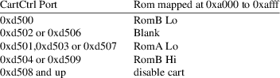
OssB is also an Oss super-cart except that the cartridge ROM has been dumped to disk in a different order and hence the addressing of the cartridge ROM contents is different. If the Oss option does not work, try this option instead.
SDX emulates a 64K large ROM image with eight banks mapped into the region of 0xa000 to 0xbfff.
EXP a variant of the SDX cartridge with a slightly different bank switching logic.
Diamond another variant of the SDX cartridge type with just another bank switching logic.
XEGS emulates a variable size XEGS cartridge. This cart type occupies 16K of memory within the address space of the 6502 CPU but consists of several banks that can be mapped into the 0x8000...0x9fff region.
ExtXEGS a mildy extended version of the XEGS cartridge type that additionally allows disabling the cartridge.
BountyBob emulates the 40K sized BountyBob cartridge for the 5200 games system. This cartridge uses a very unique bank switching mechanism that requires its own emulation provided by this option.
Flash Emulates Steven J. Trucker’s “AtariMax” flash ROM cart. This is a 128K or 1MB cart with bank-switching logic that is mapped into the 0xa000...0xbfff region. This cart type allows flashing, and thus the cart ROM can be modified by the emulation process. The emulator will ask you to save back the cart image as soon as the cart shall be removed again.
MegaROM Emulates the various types of the Mega ROM cartridges. These carts come in varous sizes and map in as 16K banks in the area of 0x8000...0xbfff.
Atrax Emulates the 128K bank switching Atrax cartridges that map in as 8K banks in the area of 0xa000...0xbfff.
Will Another super cartridge type of 32K or 64K size that maps its 8K sized banks into the area of 0xa000 to 0xbfff.
Phoenix This type emulates the Phoenix and Blizzard super cartridges. The first is a regular 8K cart that can be disabled, the latter is a 16K switching cart. Both are emulated by the same cart type.
ATMax A super cart that comes as 128K or 1MB cartridge.
-rtime8 bool
enables or disables the emulation of the RTime-8 pass-thru cartridge. This this a cartridge rom that contains a battery buffered real-time clock and passes the cartridge slot connections thru to be able to use the real-time clock together with other cartridges. The default is not to enable the real-time clock cartridge.
CARTFLASH
Options
The flash cartridge type is the only cart type that can be
configured by the command line and the GUI. Currently, there
is only a single option available, namely:
-enablecartflash
If this option is disabled, the flash cartridge mapping will be disabled on the next reset. However, the cart still receives the bank mapping signals and thus can be re-enabled by software. This is useful if you want to re-flash the cartridges by Steve Trucker’s flashing software: Just disable this switch, insert the flash software disk, and reboot. The cart will be disabled, the Atari will boot from the inserted disk, and the flash software will re-enable the cartridge, allowing you to overwrite its contents. To write the cart image back to disk, change the cartridge type to “none” or insert any other cart.
BASIC
Options
The following options control the function of the BASIC
Rom of the Atari 800XL and later models. Since the Atari
800 and 400 models do not come with a built-in BASIC, these
options are ignored for the earlier models; you’d need
to insert the BASIC as a regular 8K cartridge for them.
Furthermore, whether the basic is mapped for the XL and
later series depends on whether the Option console
key is held down during bootstrap. This option is part of
the keyboard options below, even though it influences the
working of the basic ROM for the XL and XE series.
Atari published
three versions of their basic, Revisions A, B and C. Each
has its own bugs, with revision B having the most critical
bugs (really) and revision C is the most bug-free. In
addition, the emulator also includes a built-in Basic
emulation, Basic++ , which fixes most bugs of all
three revisions.
-basicapath filename
This option specifies the file name of the Revision A Basic rom image if you have one. The ROM image is a simple 8K memory dump of the ROM appearing between 0xa000 and 0xbfff. Revision A was only available as cartridge on the 800 and 400 models; if you want to emulate these two models, insert Revision A as cartridge, see the CARTRIDGE section of this manual for details. Revision A contains several bugs and is only of historical interest.
-basicbpath filename
This option specifies the file name of a Revision B Basic rom image. This revision was shipped with most early 800XL and 600XL machines. It contains one critical bug that crashes the Basic interpreter potentially when entering source code. It should best be avoided.
-basiccpath filename
This option selects the location of a Revision C Basic rom image. This revision was delivered with many later 800XL and 600XL models and the last and final XE series. It is the most bug free of the three Basic revisions Atari produced and the recommended selection if you want an original Basic.
-basictype auto|reva|revb|revc|builtin|disabled
Selects the Basic version Atari++ should emulate. The default is “auto”, which selects Revision C on XL and XE machines if is available, otherwise the built-in Basic++.
“reva” selects the revision A Basic, “revb” the revision B basic and “revc” the revision C basic. “builtin” uses Basic++, which is compiled into the emulator and always available. “disabled” removes the Basic completely, making it unavailable indepedently of the state of the Option key on all machine types.
SIO
Options
The Serial Input/Output module is a specific part of
the operating system taking care of serial communication.
The Atari++ emulation component of the same name controls
the low-level emulation features of all devices emulated on
the serial port, hence the disk-drives, the printer, the 850
serial interface box and the tape. The emulation of the
serial port can be bypassed by the -siopatch option
described in the OS Option section above, giving a
noticeable speedup for disk-drive and printer, but possibly
also causing compatibility problems for software that
depends on precise timing or side-effects of the Os
implementation. You usually need not to care about the
settings below as they closely match those of typical serial
hardware anyhow.
-serincmddelay 0..240
The amount of time taken by a serial device to accept a command frame. This time is given in horizontal blanks. It defaults to 50 lines.
-readdonedelay 0..240
The time taken for a serial read command to complete. For the disk-drive emulation, this would emulate the time required to read a sector from disk up to the time where the first byte of the sector arrives at the port. This setting also defaults to 50 lines.
-writedonedelay 0..240
Required time to complete a write command. For the disk-drive, this is the time taken from the last byte of a sector arriving at the drive up to the time where the disk-drive sends the acknowledgement frame. This setting defaults again to 50 lines.
-formatdonedelay 0..1024
Required time to format a disk in a disk-drive, measured as the time from issuing the command up to the time where the first byte of the sector status map arrives at the serial input. This is again given in horizontal lines. Since the Os assumes that the timing of formatting is a bit more relaxed than the regular reading time - yes, formatting is a read command for the Atari - this is a separate option, defaulting to 400 horizontal lines.
PRINTER
Options
This option set controls the printer emulation. Commands and
data enter this emulation either by the SIO, or directly by
the P: handler should it be patched into the Os. See
the OS Options for more details on this. This option
set is used in either case, no matter how the emulated
printer is accessed.
-printtarget tospoolcommand|tofile
selects where printer output is sent to. For the tospoolcommand selection, printer output is piped into the printcommand selected by the option below. This is typically the “lpr” or “lp” command on Unixoid systems. For tofile , printer output is sent to a regular file. On some systems, this might be the only available option to print at all.
-printcommand file
Specifies the command used to print out text on the host system. The text arriving at the emulated printer will wait in a queue and will be flushed regularly, appearing at the STDIN of this command. Typically, this should be either lpr or lp , depending on the printing system you use at your machine.
-printfile filename
Specifies the file printer output is sent to should this type of output be selected. This is by default empty, disabling printer output completely, though the printer appears to be turned on.
-appendtoprintfile bool
defines whether the printer output file specified by the previous option is overwritten on each printer-output or the new output is just appended at the end of it. By default, new printer output overwrites older printer dumps.
-enableprinter bool
Enables or disables the emulated printer. If set to off, the printer will not react on any SIO commands as if it has been turned off. Otherwise, printing will be allowed.
-transposeeol bool
The Atari doesn’t use the regular LF character to separate lines on the printer output. Rather, it uses the character 0x9B (CSI in the ANSI set, named EOL on Ataris) to separate lines. Hence, for printing text, EOL has to be transposed into line feeds by this option, which is also the default. However, for graphics output, this character transposition will change the meaning of the graphics data send to the printer, and will hence distort the graphics. NOTE: Currently, Atari++ does not include the emulation of a graphics printer. All control and graphics sequences sent out to the emulated printer will be spooled directly into the print command without interpreting them further.
-flushdelay 0..60
This specifies the delay in seconds from the last data arriving at the emulated printer until the collected text/graphics are printed out. Hence, if data is printed at a rate lower given by this delay, they will appear in separate spool jobs. This delay defaults to five seconds.
SPEED
Options
The following set of options controls the timing of the
emulator. Several other factors influence the maximum speed,
though. First of all, the graphical front-end of the
emulator might be more or less performing. For full-screen
emulation, the SDL front-end is performing well
provided no pixel upscaling is used. In all other cases, the
X11 frontend offers higher speed. This is not the
fault of the emulator, but rather a matter of the poor
performance of SDL. Furthermore, the sound emulation has
some impact as well. For software speech emulation, high
sampling rates and slim buffers are a must, causing
additional software overhead and higher CPU loads. To
maximizing the speed, either run the X11 frontend on
1x1 or 1x2 pixel sizes and reduce the quality of the audio
output.
-unlockrate bool
If this option is set to true, then a custom, non-standard frame rate can be selected that is not locked to the video mode (see below) of the emulated machine. The default is to disable this option and thus to lock the frame rate to the natural frame rate of the emulated machine.
-framerate 1..100
This option specifies the screen refresh rate, to be given in milliseconds per frame. A standard PAL screen with 50 frames per second requires 20 milliseconds per frame, a NTSC screen requires 17 milliseconds. This option defaults to 20, i.e. the PAL rate, but is ignored unless the frame rate is unlocked with the unlockrate switch above.
-maxmiss 1..16
Unlike the above, this option controls how much frames the emulator may miss to keep the emulation speed. If this is set to one, the emulator never misses a frame, may become slow on less performing systems. If set to a value higher than one, at most the specified number of frames might be dropped to keep up the refresh rate set by the option above. Hence, it does not hurt to select a higher maxmiss rate on a fast machine, but it will keep up the speed for more complex graphics on slower machines as well at the cost of not emulating the video output frequently.
-videodmode PAL|NTSC
Intentionally identical to the same option of the ANTIC and GTIA emulation, this selects the frame rate based on the video output mode. For a PAL machine, this selects a freshmode of 50 frames/second, for a NTSC machine, the emulator will try to generate 60 frames/second. This option is overridden if the unlockrate switch above is enabled.
DISKDRIVE
Options
The following set of options controls the emulation of up to
four disk drives. The diskdrive options consist of a base
name, a dot and the unit number specifying the unit of the
disk drive they control. Hence, all the following options
exist four times, and just differ by the digit behind the
dot.
-enable.1 bool
Enables or disables the first diskdrive. If set to off, the first drive will not react as if it has been turned off, otherwise it will be turned on. The default is to enable the first drive and to disable all others.
-image.1 filename
Specifies the path to an image file to be loaded into the drive. The Atari++ emulator supports several kinds of image files: First, raw disk images that keep the contents of the disk sector by sector. These files are typically identifies by their extender .xfd. The second available format is the so called .atr format implemented by several other Atari emulators. It consists of a tiny header describing the format and the size of the disk plus the sector image. The third format supported by Atari++ is that of Atari binary load files or short, so called .exe files. These files consist of a two 0xff byte header plus address information where to place the data to load. These files are booted by writing them as DOS 2.0S files onto disk, toghether with a minimal game DOS header that bootstraps the .exe format. Note that no full DOS will be available for these files, though this emulation is sufficient for most .exe based games right away. While the above formats capture all high-level details of disks, they do not include enough information to reproduce the low-level behavior of the disk drive. Specifically, copy protected disks cannot be represented by them. Atari++ supports for that the .atx format, which includes pecularities such as disk timing, duplicate sectors or sector defects. Again, the emulator cannot create such disk images, but is able to read from them. Atari++ also supports .dcm images, which have been prepared by the “Disk Communicator” program and are (slightly) compressed. Similar to the .exe files, Atari++ cannot re-compress these. Therefore, disk images of this type are marked write-protected, making writes to these disks fail. All of the above disk image types can be compressed by means of the gzip program; Atari++ will then uncompress them on demand as soon as the image gets loaded. Since it does not re-compress images, these disks also always end up write-protected. Last but not least, the emulator also supports .bas files, which are tokenized Basic files. To load such files, make sure that either a Basic cartridge is inserted, or the Basic emulation is enabled. The Basic program will not boot automatically if the emulated machine is reset, unless Basic++ , i.e. the built-in Basic dialect, is selected and the Basic file is inserted into the first drive. All other Basic dialects will see the basic image as a file named “AUTORUN.BAS” on a write-protected disk. To start the file, enter the command
RUN "D:AUTORUN.BAS"
manually on the editor window of the emulated Basic and press RETURN.
-protect.1 bool
Enables or disables the write-protection of the inserted disk. If set to on, the disk image will be write-protected as if the write-protection notch has been covered on a physical disk. The emulator also write-protects disk images automatically if the corresponding image is marked non-writeable by the protection bits of the host operating system, or if the disk is build up for the .exe binary load file emulation, or comes in the already compressed .dcm Disk Communicator format. Similarly, all .gz compressed images and .bas files are write-protected, no matter what the original file format has been.
-drivemodel.1
1050|810|815|happy1050|warpspeed810|speedy|xf551|usturbo|indusgt
selects the drive model to emulate. The “1050” is the disk drive that shipped with the XL series of computers, and the default selection. It handles single or extended density disks of 720 or 1040 sectors, each of which is 128 bytes long. Note that this drive type does not support ATR or XFD images with sector counts or sector sizes that go beyond the capabilities of this drive. The “810” is the first disk drive that was available for the 800 and 400 models. It handles only single density disks, i.e. disks of 720 sectors of 128 bytes each. All other disk types will not be accepted. The “815” drive is a dual-disk drive supporting single or double density disks of 720 sectors, either 128 or 256 bytes per sector. The “xf551” is the last floppy drive sold by Atari, it allows single, extended, double and quadrupel density disks. It has two heads and can read the disk from both sides simultaneously. All other drive types are third party extensions that allow higher transfer speeds and extended sector formats. Note that the file management system that is part of the built-in Os emulation does not make use of the higher serial transfer speeds of these extensions, but third-party file systems will be able to detect these drive types and will then switch to a higher transfer speed.
Similar disk drive options exist for drives two to four by replacing the digit 1 in the above list by the appropriate drive number.
SIOCABLE
Options
The following set of options control the overall setup of
Matthias Reichl’s “AtariSIO” emulation. It
requires that the kernel interface and development files for
/dev/atarsio are available. Alternatively, the
DirectSerial can be used, which might be less
reliable since it cannot ensure correct timing. To make use
of the AtariSIO emulation, connect your Atari drive by means
of one of two possible interface cable types to the PC, and
disable the built-in disk drive emulation for the
corresponding drive unit. I.e. if your external drive has
been set to drive unit 1, the internal emulation for drive 1
has to be disabled by -enable.1 false , or
de-selecting the corresponding gadget in the DiskDrive menu.
-cabletype 1050-2-PC|ProSystem
selects the type of the cable that has been used to interface a 1050 or 810 drive to the PC. Currently, AtariSIO supports two cable types, the “1050-2-PC” and the “ProSystem” layout.
-enableatarisio bool
This is the overall enabling/disabling option for the AtariSIO interface, no matter which protocol is used.
-directserial bool
if enabled, Atari++ does not use the AtariSIO kernel interface but rather a user space interface, not requiring the installation of the AtariSIO kernel module. Even though this sounds attractive, timing cannot be as precise as for the kernel interface, and this interface may fail if the system is under heavy load. If AtariSIO is not compiled into the system, this is the only possible interface method anyhow and this command line option does not appear. Direct serial communication is then always enabled.
-cmdtodatadelay 0..2000
only used if the directserial option is enabled, this defines timing details for the Atari SIO emulation; specifically, this is the delay from the start of the falling edge of the COMMAND line to the start of the first byte of the command frame, given in micro seconds. According to the Atari SIO specifications, this delay shall be between 750 and 1600 usecs long. The default is 900usecs.
-cmdframelength 800..10000
This option defines another timing constraint of the Atari SIO directserial communications protocol, namely the total length of a command frame, from the falling to the raising edge of the COMMAND line, again given in micro seconds. According to the Atari SIO specifications, this delay shall be between 4060 and 5210usecs long, the default is here 5150usecs. Note that due to the load of the host system some fine tuning of this parameter might be required to get a stable SIO communication.
TAPE
Options
In addition to disk drives, Atari++ also supports an archaic
medium for data storage, namely the 410 and 1010 tape
drives. They store binary data in frequency-modulated form,
a high tone for a one called “mark” , and a
somewhat lower tone for a zero also called
“space”. The emulator supports two types of tape
images: First, .cas files, which are tape archives
that have already been converted into a binary
representation, and .wav files which contain the
digitized audio from the tapes directly. For the latter,
Atari++ emulates analog filters required to decode the
audio, though due to the nature of the process, .wav
files are less reliable, similar to real-world tape
recordings. If possible, use .cas files whenever
possible.
The option
-image filename
defines the .cas or .wav file to be read from or to be written to. Atari++ accepts both the “cas” or “wav” format as input, and can create both file types when writing to a simulated tape. The emulator cannot append to tape archives, i.e. each recording has to go into a separate file.
-play bool
This option presses the “play” button of the simulated tape drive and hence allows the motor to spin if enabled by the main system. This option does not make much sense as a command line option but is best used within the emulator. Once the Atari operating system beeps once, requesting you to start the tape, enter the menu and start the tape by the button of the same name in the Tape menu, then return to the emulation and press the RETURN button there. This will start the playback.
-record bool
For recording data on tape, the Atari operating system beeps twice, requesting you to press the “play” and “record” buttons. The same must be done in the emulator: Go to the menu, into the Tape menu, enable the “play” option there, but also select the “record” button below. The corresponding command line option is as given above, but also makes little sense as stand-alone option. Afterwards, return to the emulator window and press RETURN. This starts the recording process. If the “siosound” option is enabled, you should hear a distinct high pitch tone that is typical for data recordings on tape.
-eject bool
presses the simulated eject” button of the tape drive, removing the recording from the drive. This unloads the image and completes it on disk. It is most useful as a button of the same name in the Tape menu as well.
-recordaswav bool
controls the output format when recording data on tape. By default, Atari++ records in the more robust .cas format which does not require additional decoding. If this option is set, the emulator creates .wav files that correspond to the audio information that would be recorded on a real tape. This format is not recommended for archiving purposes as it creates longer files that are also harder to decode.
The following additional options are also recognized by the tape subsystem:
-videomode PAL|NTSC
defines the video mode the system operates in, and by that the timing of the tape. This should be, and on the command line only can be, set identical to the video mode of the host system.
-motoroffeofgap 20..10000
controls when the emulator considers a stopping tape as the end of the recording. Unlike the real machine, where the tape is entirely controlled by the user, the emulator has to make some guessing as to when a recording should be considered as completed, and no additional data is following. It currently does this whenever the motor stops longer than the indicated time, in milliseconds. The value defaults to 3000, i.e. three seconds. Once the motor halts longer than this, the simulated tape is removed from the tape recorder and no further data is expected. Enlarge this value if a tape file is created by a relatively slow BASIC program.
ATARISIO
Options
This option group fine tunes the AtariSIO interface whenever
it is available. Unlike the SIOCABLE option group,
ths set exists once per external drive and defines
parameters that are specific for the drive and not to the
cable interfacing to the drive. Therefore, the following
options exist four times, where the suffix “.1”
needs to be replaced by the appropriate drive number.
-sioenable.1 bool
enables the first - or subsequent for higher suffixes - external drive. It is disabled by default. Note that for redirecting drive accesses to AtariSIO, the emulator-internal drive emulation must be disabled as well. Hence, to use a real 1050 as first floppy drive, the following two options would be required:
-sioenable.1 true -enable.1 false
-sioprotect.1 bool
enables or disables an additional write-protection that blocks any write access to the external drive as if the floppy write-protection notch has been covered. This option defaults to off.
-siotimeout 1..30
specifies the timeout in seconds that applies to regular commands. Since the Atari++ emulation of the diskdrive applies at the level of raw POKEY communcations, the emulator cannot know the desired timeout that has been selected by the driving Atari software. This timeout defaults to seven seconds.
-sioformattimeout 10..120
specifies the timeout in seconds for formatting commands that typically require longer than regular commands. This timeout defaults to sixty seconds, i.e. one minute, but is overridden by the specifications that are returned by the disk drive itself as soon as a status command is send to the drive.
JOYSTICK
Options
Joystick emulation for Atari++ consists of two layers: First
of all, the emulation of the corresponding port at the
emulated hardware, and second the generation of sigals to
feed data into this emulated port. For that, Atari++ uses
the concept of a generic input device consisting of
two axes and four buttons, abstracting from the real
physical device on your machine to generate the input. For a
physical (analog) PC joystick, the meaning of the two axis
and four buttons should be obvious, but other sources for
the abstract input device exist as well, e.g. the mouse or
the keyboard.
Later stages of the Atari++ input layer then only refer to the buttons of these virtual devices, e.g. the keypad options of the 5200 device.
The following set of options do not control the physical input devices, but rather select how the emulator should make use of this abstraction layer, whereever it comes from, to form digital joystick input. I.e. , these options control the emulation of the emulated joystick port on input from an abstract input device.
Similar to the
diskdrive options, all joystick options exist four times,
now numbered from zero to three. The digit behind the dot in
the option name defines the joystick port this option
controls. For the Atari 800 and 400, all four ports are used
by the emulator, for the XL and later models, only the ports
0 and 1 are mapped to the emulated hardware, similar to
their physical counterparts.
-joystick.0.sensitivity 0..32767
This option sets a threshold that must be crossed by the abstract analogue joystick input to detect a joystick movement on the emulated joystick port. The lower the number, the higher the sensitivity. The abstract input devices generate axis movements from -32767 to 32767, the default of this option is that a movement of 8192 units on this scale is required to generate an input signal.
-joystick.0.port devicename
Defines the name of the abstract device that should be connected to the port. Currently, the following devices exist:
MouseStick.0
Uses the mouse on your host system as abstract input device, with the horizontal and vertical position of the mouse pointer forming the horizontal and vertical axis of the abstract input device connected to the port. There is only unit 0 of this device.
RelMouseStick.0
This works similar to the MouseStick input device above except that reacts on mouse movements rather than the absolute mouse coordinate. This is often the better alternative, unless the pointer device emulating the mouse of the host machine uses also an absolute position, i.e. a trackpad or a touchscreen.
KeypadStick.0
Uses the keypad on the keyboard of the host system forming the abstract input device. Digits 8,4,6 and 2 generate maximal axis movements in top, left, right and down movement, respectively; keys 7,9,1 and 3 move in the corresponding diagonal directions. The 0 and Enter map to button 0 of the joystick. There is - quite obviously - only unit 0 of the keypad-stick. These keys can be reconfigured dynamically, and its configuration is found under the section KeypadStick below.
AnalogJoystick.0
Uses the (real) analog joystick connected to the port controlled by the /dev/js0 device to form the abstract input of the device. Which physical axis forms which abstract axis is controlled by the analog joystick options described below, but the default mapping is the obvious: Each physical axis maps to the same abstract axis, and buttons 0 and 1 map to their abstract counterparts. Atari++ accepts up to eight physical joysticks by replacing the digit 0 in the above option by 1 to 7 for further joysticks that are then connected to the corresponding joystick devices.
DigitalJoystick.0
Uses a (real, antique) Atari Joystick connected to an analog PC joystick port by means of the “El Cheapo” joystick adapter of the author. This adaptor maps the digital input lines of a digital joystick to the buttons 1 to 4 of an analog joystick, and maps the one and only button by a resistor array to axis 0. As above, some parameters of this interface can be setup by the digital joystick options described below. Similar to above, the signals generated by this hardware are then read thru the standard /dev/js0 Linux interface, and up to eight digital joysticks can be emulated this way, accessing the devices /dev/js1 to /dev/js7. NOTE: You need to build some additional hardware to make use of this abstract device, but you get perfect Atari feeling as a bonus.
The schematics for this interface are included in the distribution as “joystick.ps”.
SDLAnalog.0
Similar to “AnalogJoystick.0” except that the joystick position isn’t read from the kernel interface directly, but rather indirectly thru the SDL library. This makes absolutely no difference except that on some systems only the kernel interface is available, whereas on others only the SDL interface can be used.
SDLDigital.0
Works exactly the same as “DigitalJoystick.0” except that the joystick movements are reported thru the SDL library rather than thru the kernel interface. Causes no difference in usage and options otherwise.
|
None |
Do not connect any device to this joystick input and read it as “centered, no button pressed” all the time. |
Similar to the diskdrive options, the joystick options exist four times with the unit numbers 0 to 3. The default for the abstract input device is to use the keypad stick for joystick zero and leave all other joysticks and paddles unconnected.
NOTE: The 5200 console system does not use standard Atari digital joystick input. Instead, analog joysticks connected to the paddle inputs are used. It is therefore mandatory to define the input devices of the first two paddles, paddle 0 and 1, to have an input device for the 5200 console. The digital joystick inputs defined by the options above WILL NOT WORK.
PADDLE
Options
The following set of options control the emulation of up to
eight paddles that can be connected to the emulator. Similar
to the above, the emulation requires an abstract input
device to read the input of the emulated paddle from; paddle
emulation uses only axis zero of this abstract device to
form the paddle input, but requires buttons zero and one for
the emulation of the two paddle buttons.
NOTE: The paddles on the Atari machines use the joystick input lines for the paddle buttons. For that reason, paddles and joysticks should not make use of the same input device.
NOTE: For the 5200 system, the controller is connected as a paddle and hence these - and not the joystick options - must be defined.
As above, the
following options exist several times, with the digit
0 replaced by 1..7 for all other paddle units.
Whereas the Atari 800 and 400 allow this maximal number of
eight paddles, inputs 4 to 7 are not available on a real
Atari XL or XE. However, the Atari++ allows connection to
these paddle inputs regardless of the emulated host input as
the corresponding input lines are otherwise unused on the
real hardware either.
-paddle.0.sensitivity 0..32767
Adjusts the sensitivity of the paddle and hence the movement necessary for a full paddle rotation. Note that the abstract input device generate movements on a scale of -32767 to 32767.
-paddle.0.invert bool
Since paddle input has no natural orientation, this option allows you to invert the meaning of the input device position. Since some games interpret paddle positions just opposide to others, this flag helps you out as it changes left movement to right, or upwards movement to downwards movement.
-paddle.0.port devicename
Defines which abstract input device to use to feed the paddle emulation. The very same devices as for the joystick emulation are available here, though pure digital devices as the keyboard or the digital joystick device are not very usable for paddle emulation. Since an abstract input device provides two axis and two buttons each, it makes sense to map one input device to two paddle inputs: For that reason, each even paddle number maps to the first axis and the first button, and each odd paddle number maps to the second axis and button of each abstract input device.
LIGHTPEN
Options
Atari++ also allows emulation of the lightpen as a kind of
analog input device. Though rarely used, the corresponding
input lines at ANTIC are available and can be feed by this
emulation component. There is only one lightpen device
available, though its other options are very similar to the
paddle emulation.
-lightpen.sensitivity 0..32767
Defines the sensitivity of the lightpen and hence the factor/adjustment between the real physical device and the emulated position of the lightpen on the screen.
-lightpen.port devicename
Specifies which abstract input device to connect the emulated lightpen to. The list of available devices is identical to the list of devices for all other gameport like input, please see the JOYSTICK Options section above.
KEYPADSTICK
Options
Options in this group define the keys used by the
Keyboard Joystick emulation. By default, the numeric
keypad to the right of a standard PC keyboard is used for
this purpose, but the keys can be reconfigured.
-leftup keyname
defines the key that moves the stick in the diagonal left upwards position. Pressing the left and the up key simultaneously is equivalent to this. Key names are either the numbers 0 to 9 or the letters A to Z, indicating the corresponding keys on the main keyboard, or are taken from the list below. An empty string indicated by an empty pair of opening and closing quotes disables the corresponding function.
-up keyname
-rightup keyname
-left keyname
-right keyname
-leftdown keyname
-down keyname
-rightdown keyname
move all the joystick in the corresponding direction. Diagonal directions can be either assigned to separate keys, or are reached by pressing the two direction keys simultaneously.
-center keyname
centers the joystick.
The option
-leftbutton keyname
configures the key that emulates the left button if the keypad is used as a paddle, or the one and only button if the keypad emulates a digital joystick.
-rightbutton keyname
selects the key to emulate the right button on paddles. The key has no function if the keypad emulates a standard Atari joystick.
Key Names are either alpha-numeric characters from 0 to 9 or A to Z indicating the corresponding keys on the main keyboard, or the following special names. Note that names containing spaces need to be quoted on the command line:
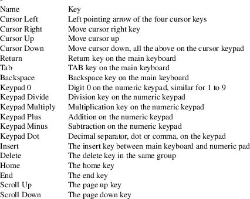
ANALOGJOYSTICK
Options
Unlike the JOYSTICK Options, the following set of
options describes the mapping of a true analog joystick
connected to one of the joystick device drivers to the
abstract input device that forms the basis for either
joystick, paddle or lightpen input. Hence, it defines the
layout of the AnalogJoystick devices that can be
connected to the above emulation components.
Similar to most
above options, the following options exist several times
with the digit 0 replaced by the unit of the
corresponding device. Hence, the analog PC joystick
controlled by /dev/js1 is setup by options similar to
those above with a 1 replacing the 0.
-first_button 1..16
Defines which button of the physical joystick shall map to the button zero of the abstract input device. The default is to connect the first button of the physical joystick to the first button, i.e. button zero, of the abstract device. This defaults to button #1 of the real device. If used in conjunction with the 5200 keypad device, i.e. the “KeyButton.0.Button” and related options, the button index #1 used in the keyboard configuration refers to the button addressed by this option, and not directly to a hardware button. Thus, keypad buttons are routed twices: In a first stage, but the hardware abstraction layer defined by this option, and a second time by the keyboard device picking one of the four abstract buttons the hardware abstraction layer offers.
-second_button 1..16
Similar to the above, this defines the real button that shall be connected to the emulated second button of the emulated device.
-third_button 1..16
Again, this routes one of the hardware buttons to a virtual button of the hardware interface layer. Since the Atari hardware is only capable of supporting at most two buttons, namely for the paddles, the third and fourth button are only usable for the 5200 keypad emulation, see the keyboard configuration chapter for details.
-fourth_button 1..16
The input line of the fourth button an abstract joystick device might support. Only usable from the keypad emulation.
-haxis.0 xaxis.1|yaxis.1|xaxis.2|yaxis.2
Specifies the axis of the physical joystick that should emulate the horizontal axis of the abstract analog joystick device. The default is the first horizontal axis of the physical joystick.
-vaxis.0 xaxis.1|yaxis.1|xaxis.2|yaxis.2
Similar to the above for the vertical axis of the abstract device. The default is, of course, the first vertical axis.
SDLANALOG
Options
This is a modified AnalogJoystick interface that
reads joystick positions thru the SDL library instead using
the kernel interface directly. Its configuration options are
identical to that of the AnalogJoystick interface and
are hence not described here again.
DIGITALJOYSTICK
Options
The next set of options is used to setup the digital
joystick input and the “El Cheapo” Joystick
input adapter that can be used to connect a true Atari
digital joystick to the analog gameport input of the PC.
This option set also exists several times, once for each
available gameport detected in the host system. Once again,
replace the digit 0 by the unit number of the
corresponding device the joystick is connected to.
-upbutton.0 Button.1|Button.2|Button.3|Button.3
Defines which of the four joystick buttons on the analog gameport acts as the input for the upwards movement line. The default is button three.
-downbutton.0 Button.1|Button.2|Button.3|Button.3
Similar to the above for the downwards movement. The default is button one.
-leftbutton.0 Button.1|Button.2|Button.3|Button.3
Selects the button that acts as the left movement input. This defaults to button four.
-rightbutton.0 Button.1|Button.2|Button.3|Button.3
Selects the button for right movement input. The default is button two.
-triggeraxis.0 XAxis.1|YAxis.1|XAxis.2|YAxis.2
Selects the analog gameport axis that reads the digital joystick button input. The default is that the digital fire button is connected to the first horizontal axis.
-triggerthres.0 -32768..32768
Since the digital button is read by the game port as an analog input, the digital signal arrives as a numerical value between -32768 and 32767 at the digital joystick device of the emulator. The above option sets the threshold by which the button is read as pressed resp. released. The precise values depend of course on the resistance network that is connected to the analog gameport line, but the default for 16384 works fine for the author’s hand-soldered adaptor.
-inverttrigger.0 bool
With this switch, the fire button input line reading can be inverted, i.e. active inputs are read as released fire buttons and vice versa. This shouldn’t be necessary with the author’s interface. The default is hence off.
SDLDIGITAL
Options
This is just a slightly modified DigitalJoystick
interface that connects to SDL instead to the kernel
interface. All its options are identical, please refer to
the above list for details.
OSSHQSOUND
Options
In the following, we give a set of options to control the
generation of audio thru the OSSHQ driver, making use of the
Open Sound System kernel interface or an equivalent
emulation, e.g. by ALSA. Rather than the POKEY
Options, these options concern the quality of the
samples generated by the POKEY emulation and its built-up
for OSS. For audio output to work properly, you need to have
an Open Sound System compatible audio driver
available, and you need to have permission to access the
/dev/dsp device.
Note that
generating audio samples with high quality has a
non-neglectable impact on the CPU load. If your machine has
problems keeping up with the natural framerate, or if the
CPU load is too high, try to lower these settings, use a
different audio front-end, or disable sound output
alltogether.
-enablesound bool
Enables or disables the generation of audio output. The default is the enable the audio generation, unless no audio output device is available which then disables audio output.
-enableconsolespeaker bool
Enables or disables the emulation of the Atari console speaker. The Atari Os generates keyboard click sounds and the buzzer by means of this speaker. Some games also use the console speaker for speech output.
-consolespeakervolume 0..64
Sets the output volume of the console speaker. Setting this to zero effectively disables the output, and setting this to a value higher than 32 may cause distortion with regular POKEY audio output. This option ranges from zero to no up to 64 for maximal volume with the default being 32.
-audiodevice filename
Specifies the name of the audio device to send the samples to. This device must accept all Oss specific ioct() settings. It defaults, naturally, to /dev/dsp.
-samplefreq 4000..48000
The sampling frequency in Hz by which samples should be generated, and hence the limiting frequency for the audio signals. The higher this value is, the higher are the possible frequencies that can be emulated, and the more natural the sound plays. Frequencies higher than 16000 are required for software speech output, but otherwise a frequency limit of 8000 Hz is enough for all other sound effects. The default is 44.1kHz, the CD replay frequency.
-fragsize 2..16
This is a technical setting that allows to specify the size of an audio buffer fragment. These fragments get filled sample by sample and are transmitted to the replay hardware as soon as they are full and the hardware is capable of playing another sample. If they are too small, the buffer has to be refilled too often and you might hear drop-outs since the computation cannot keep up with the audio replay. If they are too long, the audio latency becomes too high and the sound is no longer synchronized with the video out. This option does, however, not specify the fragment size itself, but rather the exponent to the base of two, i.e the true fragment size will be two to the power of this exponent. The default for this option is 8, i.e. a fragment size of 256 bytes. You’d rarely need to play with this setting.
-numfrags 6..256
The number of buffers, each of the size given by the above argument, to be used for audio sample generation. More buffers reduce the likelyhood of drop-outs, but increase the latency. The default are 16 buffers, more is rarely useful.
-forcestereo bool
Enforces to generate stereo samples even though mono output is available for the sound chip. Some broken sound implementations, notably ALSA on the Emu10K1 chipset require this to work correctly under all configuations.
OSSSOUND
Options
The Oss driver is a less complex frontend for the
Open Sound System audio interface, though it requires
a very precise implementation of it. Some emulations, e.g.
ALSA might not be suitable for this frontend, and it
rarely provides better quality than HQOss. Since it
provides quite similar options as well, we only describe
most of them roughly and refer to the HQOss frontend
for further details.
-enablesound bool
Enables or disables the generation of audio output.
-enableconsolespeaker bool
Enables or disables the emulation of the Atari console speaker.
-consolespeakervolume 0..64
Sets the output volume of the console speaker.
-audiodevice filename
Specifies the name of the audio device to send the samples to; this is typically /dev/dsp.
-samplefreq 4000..48000
The sampling frequency in Hz for the audio output.
-refillfreq 20..48000
The frequency in Hz by which the audio samples are recomputed by the emulator. If this is set to a relatively low value, but the sampling frequency is high, then quite a lot of samples are computed in one go, but the updating period by which these samples are matched to the true POKEY output is rather low. This refill frequency must be lower than the sampling frequency above. For software speech generation, a refill frequency of 15700 proved most effective. For regular sound output, this frequency can be much lower. Note that for software speech output, the audio kernel interface must meet the specifications of the Open Sound System architecture precisely. Some emulations, e.g. ALSA fail here. Try to use the HQOss frontend in this case; in most cases, it is capable of providing better quality anyhow.
-fragsize 2..16
The exponent for the base of two giving the size of an audio buffer fragment in bytes. This is similar to the fragment size of the HQOss frontend and is discussed in more detail above.
-numfrags 1..256
The number of buffers to be used for audio sample generation. For two buffers, this means that audio output is double-buffered. More than four buffers are rarely useful for this driver, making this the default.
-forcestereo bool
Enforces to generate stereo samples even though mono output is available for the sound chip. Some broken sound implementations, notably ALSA on the Emu10K1 chipset require this to work correctly under all configuations.
WAV
Options
The WAV frontend is the alterantive audio output module that
rather records the generated sound than to play it; or at
least, this is its main intention: WAV also offers playback
of the recorded sound, though due to timing restrictions the
quality of this sound is - sometimes noticably - worse than
that of the Oss or HQOss module and the sound that got
recorded in the final .wav file. As said, the quality
of the output file will be perfect.
-enablerecording bool
Enables or disables the recording to the wav output file. If enabled, the emulator starts recording as soon as the emulated machine starts running, though the recorded file is disposed and re-written from scratch on a cold-reset, e.g. generated by the F7 key. To record game music, you’d best first enable the recording, then start the game, let the music play and interrupt the music by entering the configuration menu with the F1 shortcut. Then turn off recording. This will leave the recorded file intact.
-enableplayback bool
Enables or disables the playback of the recorded data. If this option is enabled, the WAV frontend will also play the music over an OSS compatible sound driver. It is typically a good idea to enable this option as well whenever it is available, i.e. whenever an OSS sound driver is in the system. Note, though, that the quality of the sound output might be of noticably worse quality than that of the recorded sound within the output file.
-enableconsolespeaker bool
Similar to the option of the same name for the OSS sound front-end, this option enables or disables the generation of sound thru the console speaker. It is typically used for the keyboard-clicks and the buzzer-sound.
-consolespeakervolume 0..64
Sets the volume of the console speaker if enabled. This option defaults to 32.
-outputfile filespec
Defines the full path of the .wav output file to record the sound in. If this option is not given, then this file name defaults to “out.wav”.
-audiodevice device
Sets the name of the OSS sound device. This is typically “/dev/dsp”, which is also the default setting for this option.
-samplefreq 4000..48000
Sets the sampling frequency in Hz for the recorded .wav file, and by that also the sampling frequency of the played-back audio output. The smaller, the less CPU power is required and the shorter the output file becomes for recording the same timespan of music, but the worse the quality gets. This option defaults to 15700 Hz which is the best compromise between quality and data size. Much higher frequencies make little sense and do not improve quality noticably.
-fragsize 2..16
sets similar to the OSS front-end option of the same name the exponent for the size of the fragment for audio playback. It has no influence whatsoever on the output file whatsoever, but rather modifies the behaivour of audio playback only.
-numfrags 1..256
sets the number of audio fragments (buffers) for audio playback, similar to the option of the same name of the OSS front-end. It has no influence on the recorded samples.
SDLSound
Options
The next audio front-end is generation thru the Standard
Direct Media Library, or short SDL, all provided
you have an SDL library and the required development files
installed on your host. The quality of the SDL output is
close to that of the HQOss frontend, though due to
the different driver architecture, it is unfortunately more
likely for the SDL driver to generate drop-outs. It
furthermore requires longer fragments and has therefore a
higher latency, but it is very portable as SDL exists on a
variety of platforms.
-enablesound bool
enables or disables the sound generation thru SDL, similar to the same option for the OSS and WAV audio front-ends.
-enableconsolespeaker bool
will toggle the console speaker emulation on or off. The emulation is enabled by default.
-consolespeakervolume 0..64
adjusts the volume of the console speaker. This setting defaults to a medium volume of 32.
-samplefreq 4000..48000
adjusts the sampling frequency for the audio generation in Hz = samples per second. Higher sampling frequencies provide closer sound output emulation, but also enlarge the CPU load on the system. The sampling frequency defaults to 44100Hz, i.e. CD quality. You might have to lower this setting on weaker systems.
-fragsize 2..16
selects the size of an audio output buffer as the exponent for the base of two. The smaller the fragment size, the more often the audio output will get updated to reflect the audio register setting of the POKEY chip, and the more natural audio output will become. If the fragment size is too small, then audio output will degrate quickly, though, as the emulation will then no longer be able to refill the output buffers in time. The optimal setting for this value is around nine, which is also the default.
-forcestereo bool
Enforces to generate stereo samples even though mono output is available for the sound chip. Some broken sound implementations, notably ALSA on the Emu10K1 chipset require this to work correctly under all configuations.
DirectX
Sound Options
This audio front-end is only available for win32 compatible
platforms and requires at least DirectX 8.0 installed on the
host machine. It offers the highest audio quality available
under the win32 operating system at minimal latency.
The following
options are available for DIRECTX sound:
-enablesound bool
enables or disables audio output. It is enabled by default.
-enableconsolespeaker bool
turns emulation of the console speaker on or off. This speaker generates the keyboard click and buzzer sounds, but is otherwise not very frequently used; it is enabled by default.
-consolespeakervolume 0..64
controls the volume of the console speaker. The default setting is 32, though higher volumes are not recommended as they will cause distortion when mixing them with the regular POKEY output.
-samplefreq 4000..48000
selects the sampling frequency in samples per second. The default is 22050 Hz, i.e. half the frequency of an audio CD. Higher frequencies are not recommended for DirectX as the CPU load gets very high otherwise.
-fragsize 2..12
sets the size of one audio buffer, also called a “fragment” by defining its exponent to the base of two. Thus, increasing this setting by one doubles the size of one audio buffer, a setting of eight causes buffers that are 2^8 = 256 samples long. This is also the default buffer setting and a good compromize between latency and quality for fast, up-to-date hardware. Slower systems might require higher values; in case you hear audio drop-outs, increase this value.
-numfrags 6..16
defines the number of audio buffers of the above size to be allocated. A higher number will allocate more buffers, causing higher latency, but also lowering the probability of drop-outs. The default are six buffers, but this number should be increased in case the audio output isn’t smooth.
ALSASound
Options
The last available audio front-end uses the ALSA sound
drivers available on Linux and the asoundlib API.
Both, and their development files must be available at
compile time to provide this interface.
If available, ALSA provides a high quality sound similar to the HQOSS frontend, though its demands concerning the CPU power are very moderate and lower than that of other frontends.
The following
options are available for ALSA:
-enablesound bool
enables or disables the sound output. This defaults to on.
-enableconsolespeaker bool
controls emulation of the console speaker; this option is turned on by default.
-consolespeakervolumne 0..64
selects the volume of the console speaker. It is set to 32 by default; higher volumes might cause distortion in the sound output.
-audiocard name
selects the audio hardware ALSA shall sent the samples to. This is not a device specification in the sense of a path name. It defaults to “hw:0,0” which addresses the first available audio hardware that is handled by ALSA. Further audio cards are named “hw:1,0” and so on. Even though Atari++ supports a wide range of sampling formats natively, some exotic cards might require the help by ALSA. To enable this additional software support, substitute “hw” by “plughw”, e.g. specify “plughw:1,0” as device name. This enables an additional software conversion inside ALSA.
-samplefreq 4000..48000
selects the sampling frequency in samples per second. The default is 44100 Hz, i.e. CD quality.
-fragsize 2..16
defines the size of an audio buffer fragment as the exponent to the base of two. This works very similar to all other audio frontends and is not explained here again. ALSA allows a relatively small default of 8 here, meaning fragments of 2^8 = 256 bytes.
-numfrags 6..256
defines the size of the audio buffer in fragments. The more fragments, the lower the probability of drop-outs but the higher the latency. The number of fragments defaults to 12.
-forcestereo bool
Enforces to generate stereo samples even though mono output is available for the sound chip. Some broken sound implementations, notably ALSA on the Emu10K1 chipset, may require this to work correctly under all configuations.
X11
Options
The next set of options controls the X11 graphical
frontend of the Atari++ emulator, all provided it has been
selected with the -frontend X11 option. Otherwise,
the control options of the selected frontend apply instead.
-privatecmap bool
If set to on, then Atari++ will emulate its own color map for the emulation window output. This is only required if you run it on a 8 bit display and the emulator further complains that it couldn’t allocate enough free pens. The downside of this option is that the colors will get wrong as soon as the mouse pointer leaves the emulator window on an 8 bpp display, but at least you get a display with proper colors otherwise.
This option is not at all useful for 16 bpp or any other true-color displays as the color mapping will be correct all the time otherwise. Therefore, the default for this option is off.
-syncx bool
A boolean flag that describes whether the X11 frontend shall try to keep the display output in sync with the emulator. If set to off, all rendering operations will be asynchronous, possibly causing some lag between the gameplay and the display. The downside of enforcing synchronous graphic renderning by setting this to on is that the display refresh must wait for the X server to perform the refresh and to notify the client about it, adding the turn-around times and the net transfer overhead to the display refresh time. It is therefore rarely a good idea to enable this option.
-disableDPMS
disables the display management power signal extension and thus prevents the monitor blanker or screen safer of the operating system to jump in while playing with the emulator. It is usually a good idea to enable this option.
-xvideorendering bool
will use the “XVideo” extension of the X11 system to render graphics on the screen. Unlike the default rendering mode which builts the image from many colored rectangles, this render mode writes the raw display data into a shared memory region which is then scaled and pushed to the screen directly by the video overlay mechanism of the graphics card when available. Depending on the graphics hardware, this option may provide better performance on lower end hardware.
-renderindirect bool
If set to on, then all rendering happens indirectly to an off-screen pixmap in a first step, then blitting the pixmap in a second step back to the screen. This has the downside of being slower by requiring an additional transfer step, but it makes the display refresh smoother as well as the rendering operation itself remains invisible. Since it makes emulation slower, this option remains off by default.
-screenbase filename
Selects a filename base for the screen dumps. If a screendump is requested, a counter and a file type extender is appended to this name and the screen contents are saved to this file. Currently, screen dumps are saved in the Portable Pixmap (ppm) Format that is readable by most Linux/Unix tools, e.g. by xv and gimp. The default filename is “ScreenDump”.
-dumpformat PNM|BMP|PNG
Specifies the file format to be used for screen dumps. PNM is the simplistic *nix specific PNM/PPM true color dump file format that is understood by most *nix programs. BMP is the Windows Bitmap format, a very popular but rather aged image file format of the Win world. PNG is the “Portable Network Graphics” file format, an image format driven forward by the Open Source community. This file format requires the availibility of the LibPNG.
-pixelwidth 1..8
This option spezifies the magnification degree in horizontal direction by which the pixels of the emulated scren are rendered to the X11 display. The default of the pixelsize option is 2, i.e. a single pixel of the Atari display is rendered twice as large on the X window showing the emulation. Depending on the hardware driver of your graphics board, enlarging the pixelsize might be almost for free with the X11 frontend.
-pixelheight 1..8
This option controls the magnification of the pixel size in vertical direction, similar to the above option the default value is 2.
-leftedge 0..64
Sets the horizontal position of the first Atari pixel that gets displayed within the X11 window. The pixels left to this pixel are not made visible. This option is useful either to align the size of the X window to the natural size of the screen the window is contained in, to hide the leftmost pixel junk caused by the horizontal ANTIC scrolling, or to remove the hardware border of the window, similar to the operation performed by some TVs. This option defaults to 16, just enough to make the HSCROLL artefacts invisible.
-topedge 0..64
Sets the first row of the ANTIC display to render to the X11 window. This is otherwise identical to the -leftedge option except that it works in vertical direction. The default of this option is zero.
-width 320..480
Sets the total amount of pixels to render into the screen and hence the inner dimension of the X window. Reducing this width can be either useful to fit this window into the screen, or to avoid some pixel junk at the right edge of the ANTIC display. The default width is 352 pixels.
-height 192..248
Sets the height of the window in emulated pixels. Since the lowest lines are always left blank anyhow, they need not to be rendered. Therefore, this option defaults to 240.
SDL
Options
The next option set controls the layout of the alternate
emulator frontend driven by the Simple Direct Media
Library, or short, SDL. This library allows fullscreen
output, though its overall performance is lower as soon as
it requires to upscale the pixels. The SDL frontend is
activated by the -frontend SDL switch, and only then
the following options apply:
-leftedge 0..64
Similar to the X11 Option of the same name, this selects the first visible emulator pixel on the SDL screen. This option defaults to 16.
-topedge 0..64
Specifies the first visible row on the screen. The default is to start the display at row 0.
-width 320..480
The width in emulator pixels of the screen to render. The default is 352.
-height 192..248
The height of the emulated display. The default is to drop some lines at the bottom end since they are always blank anyhow: 240 lines are rendered by default.
-pixelwidth 1..8
Set the width of one emulator pixel in SDL pixels. The default is that one emulator pixel is represented by one pixel on the SDL screen. Setting this to values larger than two easely degrades the emulator performance.
-pixelheight 1..8
Set the height of one emulator pixel in SDL pixels. As already said above, the default is one. Pixel heights larger than two typically slow down the emulator too much to be useful.
-screenbase filename
Defines a base file name similar to the X11 screenbase option for screen dumps. The filename of the screen dump is, as above, formed by a counting number and the extender of the file format. Currently, screen snapshots are saved as PPM images.
-doublebuffer bool
enables double buffering, provided the implementation of SDL on the host system implements it. Double buffering allows smoother scrolling at the price of a slightly higher CPU load. At the time of writing, only the win32 version of SDL provides double buffering, the Linux version does not. Thus, enabling this option under Linux does nothing. However, the renderindirect option of the X11 front-end does something very similar.
-fullscreen bool
Enables or disables full screen display. The default is to use the full screen display, and it is recommended to use the X11 frontend otherwise as it provides higher performance in this case.
-dumpformat PNM|BMP|PNG
Specifies the file format to be used for screen dumps. PNM is the simplistic *nix specific PNM/PPM true color dump file format that is understood by most *nix programs. BMP is the Windows Bitmap format, a very popular but rather aged image file format of the Win32 world. PNG is the “Portable Network Graphics” file format, an image format driven forward by the Open Source community. This file format requires the availibility of the LibPNG.
-shieldcursor bool
Enables a workaround against an SDL bug that allows a program to overdraw the active mouse pointer, trashing its backing store and leaving invalid graphics behind the pointer if it is moved away. This workaround will remove the cursor prior the drawing operation to avoid the problem, at the cost of a possibly flickering pointer.
-deblocker bool
Enables a deblocking filter that creates rounder and smoother graphics for pixel sizes between two and three. This avoids to some degree the blocky-ness of the emulated display that is caused by the higher and finer resolution of the PC monitor compared to the TV output the Atari hardware was designed for.
850INTERFACE
Options
The Atari++ contains a complete emulation of the 850 serial
interface box, including a boot-able R: handler that would
be usually included in the ROM of the interface box. The
emulation allows you to use the serial port of the host
system as a serial output port of the 850 interface,
allowing you to connect a modem to the emulated Atari. The
emulation has only two limitations: For first, it cannot
provide some of the exotic baud rates the 850 box is able to
generate, and it provides only a single serial port, not
four of them. On the other hand, it offers a true hardware
handshake, unlike the Atari 850. For more information about
the emulator provided R: handler, see below.
The following
options configure the 850 emulation:
-enable850 bool
Enables or disables the 850 interface. If disabled, the interface box will not react on any SIO commands and will hence pretend to be turned off.
-serialname path
Specifies the device name for the serial port the emulated 850 interface shall use as its output port. The default device name is “/dev/ttyS0”, i.e. the first serial output port of the system.
Atari++ is not only controlled by its huge amount of command line parameters. It is also adjustable by configuration files. These configuration files contain the very same options than the command line parameters, except that there is only one option per line, an equals = sign separates option from value, and the minus-sign in front of the option is missing. Additionally, empty lines and comments starting with the hash-mark # are allowed. The following example shows a typical configuration file:
#
# This is the config file for the atari++ emulator
#
HoldOption = true
Artefacts = off
Enable.1 = on
Protect.1 = on
SIOPatch = on
InstallPDevice = on
SampleFreq = 44100
RefillFreq = 15700
NumFrags = 4
Joystick.0.Port = DigitalJoystick.0
The Atari++ emulator knows three configuration files: The system specific configuration file, residing at /etc/atari++/atari++.conf, the per-user specific configuration file at ~/.atari++.conf and the per-directory configuration file at ./.atari++.conf. Each later configuration file overloads the defaults of the former, and the command line arguments finally overload all of them. This way, the least frequently adjusted options should go into the configuration file in the home directory, with system specific settings in /etc.
The Atari++ emulator uses the following keymap:
|
F1 |
This key enters the graphical configuration menu. The usage of this menu should be quite obvious as all the options are named as in this manual and sorted under the same topics. The menu is left by the topmost Prefs topic which also allows loading and saving the settings and entering the monitor. The F1 key changes its meaning for the CURSES front-end, where no full menu is available. Here, it replaces the Atari resp. inverse-video key. | ||
|
F2 |
is mapped to the Option console key. | ||
|
F3 |
is mapped to the Select console key. | ||
|
F4 |
is mapped to the Start console key. | ||
|
F5 |
is the Help key that is otherwise only available on the XL and XE hardware. | ||
|
F6 |
is the Reset console key. Its function differs a bit amongst various models. For the Atari 800 and 400, this key just signals a special NMI interrupt at ANTIC, and the Os resets the system manually. For the XL and XE, this signal is really connected to the CPU reset line. Atari++ emulates this behaivour. | ||
|
F7 |
coldstarts the system as if it has been turned off and on again. Hence, unlike F6, this is a true coldstart and not a warmstart. | ||
|
F8 |
emulates the Break key, used to stop listings and BASIC programs. | ||
|
F9 |
requests a screen dump. Where this screendump goes is a matter of the -screenbase command line option. | ||
|
F10 |
aborts the emulator immediately, similar to closing the window. |
F11 and Pause
pauses the emulator. Pressing F11 again continues the emulation.
|
F12 |
enters the on-line monitor that is described below. |
Home/Clear
emulate the Shift+< sequence, enforcing a clear screen.
|
Insert |
inserts a blank character under the cursor by emulating Ctrl+>. If pressed together with shift, a blank line is inserted at the current line position. | ||
|
Del |
removes a single character under the cursor by emulating a Ctrl+BS keyboard sequence. |
Cursor Keys
move the cursor in the indicating direction by holding either +,*,-,= and the Ctrl key down. This works fine most the time except for the DDT debugger which requires these keys pressed without Ctrl for window movement. Do not use the separate cursor keys but the above keys directly for DDT.
|
Esc |
emulates, as expected, the ESC key on the Atari keypad. |
Keypad keys 7,8,9,4,5,6,1,2,3
are part of the “keypadstick.0” device and a possible emulation source for joystick input; they are also configurable, see the KeypadStick section.
Keypad keys 0 and Enter
emulate the joystick button of the device as well.
|
ALT |
emulates the Atari or InverseVideo key. For some implementations, this key is also emulated by the Windows key. |
All other keys have their natural key binding except for the 5200 game console which is explained below. This binding is given by the current keyboard layout; this means especially that the keyboard layout is language specific and does not necessarely match the layout of the Atari keyboard. E.g. for a german keyboard, the keys for “y” and “z” work as printed on the PC keyboard, and not as for the (american) Atari keyboard layout. I currently consider this as an advantage.
KEYBOARD
INPUT FOR THE 5200
Keyboard input on the 5200 game system is considerably
different as this console does not have a keyboard, but a
small numberic pad on each of its controllers. This pad
consists of the numbers zero to nine, the asterisk
“*”, the hash-mark “#” and the
buttons labelled “Start”, “Pause”
and “Reset”. Furthermore, the joysticks have two
buttons instead of one, and are actually analog joysticks
using the paddle input lines, see above. The current
emulator uses the PC keyboard for all additional keys and
does currently not distinguish between the various keypads.
A button pressed on the PC keyboard will be read as coming
from all game controllers at once. A future version of
atari++ may possibly use a different scheme.
The following keyboard keys act differently on the 5200 system:
|
F2 |
is the “Reset” key on the keypad of the controller. This key is in no way any kind of hardware reset and is dissimilar to the “real” hardware reset which is still triggered by F6. Instead, this key is just an ordinary key that must be read by the loaded game, typically bringing you back to the setup screen. | ||
|
F3 |
is the “Pause” key on the keypad. This is also a purely software driven feature the game may or may not support. | ||
|
F4 |
is the “Start” key; it typically launches the game. |
keys 0..9
activate the corresponding keypad keys.
|
H or # |
emulates the hash-mark on the keypad controller key. Since the hashmark is not available on all native PC keyboards, the H is available as an replacement. | ||
|
S or * |
emulates the asterisk on the controller keypad. Similarly, the S is a suitable emulation for native keyboards with a hard-to-reach asterisk key. | ||
|
Shift |
acts as the second trigger button on all external controller keypads. |
F2 thru F12
act as usual, see the list above.
all other keys
are blind and perform no operation in the 5200 emulation mode.
The keyboard input of the CURSES (terminal) front-end is rather limited because the emulator has considerably less control over the keyboard than under the graphical front-ends. Note that this emulation replaces the complete front-end of the emulator, it is not fit to script it, e.g. feed input to it from a file. For that, better replace operating system editor functions and use the InstallEDevice function.
In the curses front-end, most keys work as expected, with some limitations:
|
F1 |
does not provide a full menu, which is not available due to lack of graphics output. Instead, the machine must be configured manually from the command line or the configuration files. The F1 key rather maps to the Atari or InverseVideo key as the state of the ALT key is not directly accessible from the CURSES interface. | ||
|
CAPS |
is not directly available because the CapsLock key is read by the host operating system and is not forwarded to the emulation. Instead, the emulator sends a CAPS key event after each reset, triggering the system to low-caps, which is the default under most host operating systems, and then setting the Shift key of the emulated machine according to the case of the inserted character. This makes CAPS “appear” to work right for most situations, unless a program fiddles with the operating system and alters the CAPS state manually, or performs a software-driven reset. In this case, the ASCII TILDE that is “ ~ ” will emulate a press on the CAPS key of the host. |
Requesters and Menus
Requesters and error messages will be emulated on the console by text-driven menus, allowing you to select a choice by typing the indicated character.
Graphics Output
The graphics emulation is limited to text based ANTIC modes, limited to the standard character set. Some of the text graphics can be emulated, ASCII-Art might work to a limited degree, but bitmap graphics output will not appear on the console. Some limited support for horizontal scrolling is available, though.
The atari++ allows you to make a snapshot of the complete machine state anytime within a game, to save this state to a file and to restart the game later on from this position. This is not only useful to interrupt a game temporarely - maybe because you’ve better things to do in the mean time - it also helps to try hard game puzzles several times.
To create a snapshot file, enter the menu by pressing the F1 key on your keyboard, pick the Prefs item on the left hand side list and enter the name of the state file into the bottommost gadget labelled “Save State To”.
To restore a machine state, i.e. to load the snapshot file, use the gadget “Load State From” right on top of it, or the command line option -state filename expecting the name of your snapshot file.
It is important to understand that the snapshot file contains only the part of the inner machine state that is not covered by the configuration file. For example, the snapshot file will NOT contain the currently active ROM image as this image is already sufficiently specified by the configuration. Hence, if your configuration at the time you made the snapshot differs from your default configuration, you should also save that configuration, and load it along with the snapshot. Snapshot files extend configuration files, they are not independent from the emulator configuration.
The emulator provides an optional interface from the emulated Atari to the host environment by the H: handler that makes parts of the filing system of the host visible within the emulation. To make use of this handler, it has to be enabled by the -InstallHDevice on command line option or a similar option within the configuration files. This option will replace the C: cassette interface - which is rarely, if ever, useful - by the host interface filehandler. This handler provides four units, named H1: to H4: opening four directories of the host system within the emulator. These directories are configured by the -H1Dir to -H4Dir command line options, expecting path name(s) to host system directories.
FILE NAMES
AND PATTERN MATCHING
Similar to the standard file management systems DOS 2.0S and
upper, the H: handler automatically resolves patterns
within filenames. The following wildcards are supported:
|
* |
matches a sequence of any, possibly zero, length of any characters, quite similar to the bash or the csh. | ||
|
? |
matches one single character. | ||
|
- |
Matches any character and ignores the rest of the pattern. |
Unlike the standard file management systems, the dot “.” has no special meaning for the H: device except that file names are truncated to eigth characters in front and three characters beyond it. This is a backwards compatibility feature to be able to run most Atari Os compliant programs on the H: device without additions.
The handler will furthermore ignore cases when comparing the requested file name with a file name on the host system. Files generated by the emulator will use lower case for convenience.
COMMAND
SET
The H: handler supports the following IO commands:
CMD 3: OPEN
used by the BASIC OPEN #channel,aux1,aux2,“H:filespec” command. The aux2 specifier will be ignored, valid aux1 values are:
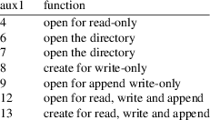
This follows closely the DOS 2.0S conventions with the addition that mode 12 is able to write past EOF and mode 13 also creates files. Mode 7 is an addition that was made for compatibility of DOS 2.XL by the author.
The filespec follows the file name convention explained in the previous subsection; the directory listing generated by codes 6 and 7 will be formatted similar to the DOS 2.0S output for the same request, but the amount of free sectors will always show up as “999”. This is because there is basically no visual storage limit for a tiny Atari file system inside a Unix/Linux workstation. Files that are not user-writeable appear as “locked” and are marked with an asterisk in the first column. Similarly, file locking and unlocking changes the user-writeable protection bit of the host system.
CMD 5: GET RECORD
Reads characters up to an EOL character, or up to the buffer end, into a buffer. This is a standard command supplied by all handlers. This implements the BASIC INPUT #channel,var and related commands.
CMD 7: GET CHARACTERS
Reads a block of characters into a buffer. This is a standard command, consult the Atari technical manual for details. Not reachable from BASIC.
CMD 9: PUT RECORD
Writes characters up to an EOL or up to the end of the buffer into the opened stream. Also part of the standard command set. Not reachable from BASIC, but related to the BASIC command PRINT #channel,data.
CMD 11: PUT CHARACTERS
Writes a block of characters into a stream. A standard command. Not reachable within BASIC, but related to the BASIC commands PUT #channel,value and PRINT #channel,data.
CMD 12: CLOSE
Releases the given stream, closes the file on the host system and frees all buffers. This command is considered harmless on streams already closed. This implements the BASIC CLOSE #channel command.
CMD 13: STATUS
Requests the status of the given stream. It returns status code 133 if the channel is not open, status code 1 if the channel generated no error, status code 3 if you are about to read from the EOF on the next go, or the last error should the stream be in an error condition otherwise. This follows standard conventions.
CMD 32: RENAME
Implements the BASIC XIO 32,#channel,aux1,aux2,“H:oldname,newname” command. Note that the file specification of this command consists of an existing filename, a comma “,”, and a new file name. This command attempts to rename the existing file to a new name.
CMD 33: DELETE
Implements the BASIC XIO 33,#channel,aux1,aux2,“H:filespec” command and attempts to remove (delete) the given files or patterns. It will fail if the files are not user-readable, i.e. appear “locked” in the emulator.
CMD 34: VALIDATE
An extension following DOS 3 conventions also reachable within BASIC with XIO 34, this command will check whether the given filespec is well-formed and will return an error code if not. It does not attempt to open any file.
CMD 35: UNPROTECT
Implements the XIO 35 command which “unlocks” the given file(s) and allows write-access into it. The host system reflects this operation by enabling the user-writeable permission bit.
CMD 36: PROTECT
Implements the BASIC XIO 36 command and “locks“ the filespec by removing the user write-permission bit.
CMD 37: POINT
Unlike command 32 to 36 above, this expects that the given channel is already linked to an open stream. It implements the basic POINT #ch,sector,byte command for placing the file pointer within the file. The Os. CIO places the sector offset in AUX4 and AUX5 and the byte offset into AUX3. However, conventions for file addressing are different from DOS 2.0S and are more orthogonal. The H: handler appears to have sectors of 256 bytes each, numbered linearly from 0 up within each file. Sectors are not global within the filing sytem but local to the file linked to the channel. This is somewhat similar to the DOS 3 implementation of POINT.
CMD 38: NOTE
Similar to command 37, this command expects an open stream on the same channel, implementing the BASIC NOTE #ch,sector,byte command. It reads the file pointer within the opened file and returns byte and sector offsets using the same conventions as POINT. Bytes are numbered consequently from 0 to 255, and sectors are numbered from the start of the file from zero up, each of them but possibly the last carrying 256 bytes of data. As long as programs use the values returned by NOTE as opaque values and avoid to perform algebra on them, this remains compatible to the DOS 2.0S. However, programs expecting 125 byte sectors and absolute sectoring are likely to fail.
CMD 40: RESOLVE
This command resolves a wild card sequence by a real filename. It reads the wildcard from IOCBAdr, and places the resolved filename back into the buffer pointed to by IOCBAdr as well. To be able to resolve non-unique wildcards, IOCBAux2 defines which of the non-unqiue matches shall be returned. It counts from one up, and returns the n-th found match to the specified wildcard.
CMD 41: BINARY LOAD
Load an executable file, and possibly initialize and run it if the file AUX2 specifies whether the loaded file shall be initialized or run. If set to 192, the file is initialized and run, 128 means “init only”, 64 just runs, but does not initialize the file, and 0 neither runs nor initializes the file.
Unimplemented commands
The H: device does not implement the various format commands for obvious reason. It also doesn’t implement some DOS 2.XL resp. DOS 3 extensions to initialize a DOS. Especially, opening the DOS.SYS file for writing will not perform anything special.
The operating system editor handler is responsible to collect user input from the screen, and output data back on it. It is usually left alone as all necessary components are emulated to let it function as is. However, to script the editor, it is sometimes feasible to redirect the output that would normally go to the editor of the machine to a Unix or Windows file, and to read input that would normally come from the keyboard from a file as well. For that, use the operating system patch -installedevice on which will replace the Atari handler by a patch running on the host system. Input data will be read from the standard input of the emulator command, and output will go both to the emulator front-end and the standard-output of the emulator command. Only a limited number control character transpositions will be available, though --- namely, the following standard ANSI control characters will be recognized and translated accordingly:
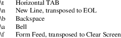
Cursor movement and other advanced sequences are left alone, they are output device dependent and require a more careful analysis that depends on the console type used. If you need to run the emulator in a console, consider the curses front-end instead.
Another limitation of the E: device patch is that it obviously cannot emulate the full-screen editor buffer of the Atari ROM as it has no access to the screen of the emulator. Instead, only the line-buffering of the console is available, i.e. the emulator will not be able to see your input unless you press RETURN. This also holds for the keyboard device, for which a patch is provided along with this option. Specifically, if software running in the emulator requires you to press a key, you need to terminate this input by RETURN to make it accessible to the emulator.
The R: handler is part of the emulated 850 interface box and not specific to the emulator. A real 850 would also provide this handler. Unlike the H: handler, the R: handler is not installed by the emulator directly, and is not available unless it is booted by a dedicated file. An Atari DOS distribution should either contain a file named HANDLERS.SYS or an apropriate AUTORUN.SYS file to bootstrap this handler. Dos 2.5, for example, provides a setup program to generate the apropriate file. This bootstrap code is not specific to the emulator and works generically for the real, as for the emulated 850 interface box. For the real 850, the bootstrap code loads code from the interface into the Atari; for Atari++, this code is part of the 850 emulation, but uses otherwise the same command set as the real 850, providing maximal compatibility.
The emulator even emulates some of the limitations of the 850 system: Once opened, the R: handler is in block mode , only allowing you to write blocks of data asynchroniously, but not allowing you to receive data. In block mode, 850 I/O can be mixed freely with any other disk I/O.
With a special XIO command, the handler must be put into concurrent mode to be able to read and write data synchroniously. In this mode, data gets sent out immediately as it is written, and input data can be received back as soon as it arrives, but any other device on the serial chain is unreachable and cannot be used savely. Thus, the disk is unavailable in concurrent mode.
COMMAND
SET
The following set of CIO commands are made available by the
R: handler:
CMD 3: OPEN
Open a channel to the R: handler. Aux1 is either 8 for output only in block mode, 5 for input with concurrent mode support, 9 for output in block and concurrent mode, and 13 for input/output, including concurrent mode support. Aux2 is ignored.
CMD 5: GET RECORD
Reads characters up to an EOL character, or up to the buffer end, into a buffer. Reading is only available in concurrent mode. Read characters can be optionally translated from ASCII into ATASCII, see CMD 38 below.
CMD 7: GET CHARACTERS
Reads a block of characters into a buffer. Again, only available in concurrent mode.
CMD 9: PUT RECORD
Writes characters up to an EOL or up to the end of the buffer into the opened stream. Available in block mode or in concurrent mode. In block mode, data is buffered and transmitted as soon as either the buffer becomes full, or an EOL is sent. In concurrent mode, data is sent out immediately. In both modes, characters can be optionally translated from ATASCII into ASCII.
CMD 11: PUT CHARACTERS
Writes a block of characters into a stream, not necessarely terminated by an EOL. Otherwise identically to the above.
CMD 12: CLOSE
Releases the given stream, possibly empties the buffer in block mode, or waits until the write buffer is empty in concurrent mode.
CMD 13: STATUS
Requests the status of the given stream. Additionally, memory locations $2ea to $2ed are filled with useful information. Location $2ea contains the error flags of the serial transfer as follows:
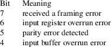
The difference between bit 6 and bit 4 is that bit 6 gets set if the emulated Atari could not react fast enough on interrupts, and bit 4 gets set if the user-provided input buffer overruns in receive mode, though the data could have been catched successfully.
Location $2eb contains the state of the handshake lines in block mode:
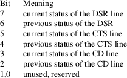
The history bits mirror the state of the lines that has been returned by the previous “STATUS” command.
Locations $2ec to $2ed are unassigned in block mode.
In concurrent mode, $2eb and $2ec contain the low- and high-byte representing the number of characters in the input buffers, respectively. Location $2ed contains the number of characters in the output buffer.
CMD 32: FORCE
Flushes the output buffer in block mode, or waits until the output buffer has been transmitted in concurrent mode.
CMD 34: SETLINES
Only available in block mode, not in concurrent mode. This command selects the states of the output lines RTS and DTR. On the real 850, the state of the data line TxD can be selected, too. The bits in Aux1 are interpreted as follows:
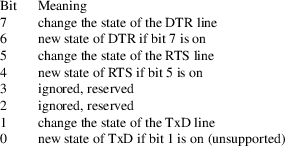
Currently, the emulator does not support direct state changes on TxD, though. The value of Aux2 is ignored.
CMD 36: SETBAUD
Specifies the baud rate and other serial transfer parameters, and handshaking. Only available in block mode, not available in concurrent mode. The bits in Aux1 are interpreted as follows:
If bit 7 is set, at least two, maybe more stop bits are generated. If the bit is clear, one stop bit, maybe more can be generated. Bit 6 is unsed, Bits 5 and 4 specify the number of data bits: If set to zero, eight data bits are transmitted, for 16 (bits = 0,1 resp.) seven bits are used, for 32 (bits = 1,0) six data bits are generated, and for 48 (bits = 1,1) five data bits are sent. Bits 3 to 0 define the baud rate according to this table:
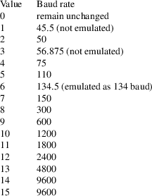
Note that values 14 and 15 generate the same rate.
The bits of Aux2 indicate which serial lines have to be monitored if concurrent mode is entered. If the selected serial lines are not set, an error is generated. For the emulator, monitoring of CTS also enables hardware handshake.
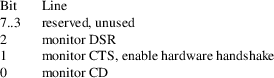
CMD 38: SETPARITY
This command is available in block as well as in concurrent mode. It selects character translations from ASCII into ATASCII and vice versa, and selects input and output parity. The bits in Aux1 have the following meaning:
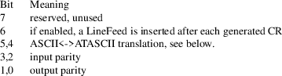
If the character translation is set to 0, EOL is translated to CR (not LF!) and vice versa, and bit 7 is stripped off. If set to 16 (bits = 0,1), additionally non-ASCII characters are not written, resp. replaced by Aux2 on input.
If the parity bits are set to zero, data is read or written “as is”. This especially implies that parity bits and stop bits of the input data are not stripped off. Furthermore, on output only eight data bits can be generated, unless the upper bits are set to one manually to emulate stop bits.
If the parity bits are set to one (bits = 0,1), odd parity is generated or checked for. This works only for seven or less data bits.
For the parity bits set to two (bits = 1,0), even parity is generated or checked for seven or less data bits.
For parity bits set to three (both bits set, bits = 1,1), the parity bit is stripped off on input, and always set on output (parity = SPACE).
Aux2 of this command specifies a “garbadge character” that gets inserted for full character translation whenever a non-ATASCII character is received.
CMD 40: STARTCONCURRENT
Enters the concurrent mode from block mode. The only way to leave the concurrent mode again is to close and re-open the channel. Aux1 and Aux2 are irrelevant for this command, but IOCBAdr and IOCBLen might provide the location and size of an optional input buffer where incoming data is kept until it is read off. This buffer should better be large for “higher” baud rates. If no input buffer is supplied, i.e. IOCBAdr is set to NULL, the handler will provide a short 32 byte input buffer.
On entering concurrent mode, the input lines specified by the “SETBAUD” command are monitored once. If the selected lines are not set, an error is generated. The real 850 interface does not provide full hardware handshaking, the emulated 850 does by monitoring CTS.
The Atari++
emulator provides its own operating system in case no Atari
ROM image is available. This makes the emulator
self-contained as you don’t require to hold any usage
rights on the original ROMs to run it. The built-in ROM
implements a full Atari XL operating system and tries to be
compatible to the XL ROM in most aspects; however, since it
is a re-implementation, absolute ROM addresses and
implementation details may, and will, differ. The paragraphs
below give a brief overview on the ROM features, the
subsections discuss the features in more detail.
Built-in FMS (DOS)
The built-in operating system comes with its own file management system, unlike the original Atari ROMs. This is classically, but imprecisely, called the DOS (Disk Operating System). This FMS is used in case no bootable disk is available on bootstrap. This allows easy loading and saving of binary images without requiring an Atari copyrighted FMS. For details, see the FMS subsection below.
Parallel Port Support
has been dropped. This is because Atari++ neither emulates any parallel port devices, nor does the author has any usable documentation about it.
The MathPack
is classically not considered part of the operating system, but is emulated fully with all documented and some undocumented entry points the author is aware of. The emulation is complete enough to allow BASIC and many other programs operate properly, except that the re-implementation is usually a bit and sometimes considerably faster. You might also consider the MathPack patch option that evaluates the mathematical operations on the host CPU and improves the speed beyond what is achievable with the 6502 implementation.
The C: Tape handler
is replaced by a dummy. This is because Atari++ does not emulate the tape device, and the ROM space was required.
CHARACTER
GENERATOR
The international character set at position 0xcc00 and up
has been slightly modified. Character position 8 (Ctrl-H) is
now the Euro-sign, character position 96 (Ctrl-.) is the
german sharp-s. The pound sign and the inverted exclamation
mark are no longer available.
INTERRUPT
HANDLING
The Os NMI handler also checks the ANTIC Reset NMI signal
and, if detected, jumps indirectly through the vector in
location $24e. This vector points to the warmstart Os
vector. Unknown NMI sources are ignored, unlike the original
Os which handles them as VBIs.
VBI Handler
The built-in Os vertical retrace handler (VBI) does not check whether TRIG3 and its shadow-register coincide. This avoids a couple of deadlock situations in various games that overwrite the shadow register. VBI handling of 1200XL keyboard features is not present since atari++ does not emulate these keys and the author has no precise documentation about them.
IRQ Handler
The IRQ handler is more streamlined than the original IRQ handler; it also no longer handles any parallel port related interrupts since they are never generated by the emulator.
KERNEL
Parallel port call-ins
have been replaced by dummies.
$e48f: BOOT850
This is a new kernel-call in that bootstraps the 850 interface handler thru SIO. It should be typically used by a minimal HANDLERS.SYS file that contains nothing but a RUN-vector to this call-in.
$e45c: SETIRQVECTOR
The SetIRQVector call-in can now also savely install IRQs as well without requiring the caller to set the interrupt bit of the CPU.
$e492: RUNDUP
This vector launches the DUP keyboard command processor. The DUP vector at $a,$b points to this address by default. The built-in DUP can be replaced by a custom DUP by changing the reset-resident vector at $3f6.
$e498: FMSINIT
This vector initializes the built-in FMS. The Os reset initializes the ROM-based FMS thru this vector if no bootable disk is found.
RESET/Bootstrap
Tape bootstrap
Since the built-in Os does not implement a usable tape device, tape bootstrap is no longer supported. The CASINIT vector (0x02/0x03) is, however, emulated properly.
Disk bootstrap
The built-in Os tries to bootstrap the disk as usual, but does not loop forever in case it detects that no disk is inserted in the drive. In case an usable boot block is found, the resident FMS is not installed and a disk-based DOS can replace it, as usual. The resident FMS is launched if either no usable boot block is found, no usable disk is found, or the user holds down the START key on bootstrap. An unusable boot block is indicated by a bootstrap address of zero, thus by a blank boot block. Note that START is no longer an indication for tape bootstrap since there is no tape support. In case the built-in FMS gains control in the boot process, see below in the FMS subsection for further bootstrap activity.
850 interface bootstrap
In case the disk bootstrap failed because no disk is inserted, the ROM also tries to bootstrap the 850 interface box since no HANDLERS.SYS file can be loaded then.
SELFTEST
The ROM space occupied by the self-test was required for the
DOS command line (the DUP ) and is therefore no
longer part of the Os. Instead, the following color codes
appear on the screen if the power-on tests fail:
Color code RED
The RAM test failed, a faulty RAM chip has been detected.
Color code PINK
The ROM checksum is faulty.
Color code BLUE
The bootstrap code could not open the initial editor handler.
SERIAL I/O
(SIO)
SIO interrupts
The serial communication is initiated thru the Pokey XMTDONE interrupt. This makes it easier for future extensions to relocate disk buffers under the Os ROM.
Parallel port handling
of SIO communications has been dropped due to lack of ROM space and documentation.
Tape device handling
is no longer provided by SIO since Atari++ does not emulate the tape anyhow. Trying to use the tape thru SIO will now initiate a standard serial communication and will no longer use two-tone modulation. Thus, tapes won’t work as expected.
Resident
Disk handler (DISKINTERF)
Format command
The DISKINTERF vector handles now the enhanced density format command of the 1050 floppy drive correctly. Thus, it supports the 1050 command set fully.
Parallel port I/O
thru DISKINTERF via SIO is no longer possible since SIO does not try to interact with the parallel port any more.
CENTRAL I/O
(CIO)
CIO CMD_OPEN
The CIO OPEN command installs now the PUT ONE BYTE vector before calling the OPEN vector of the corresponding handler. This allows the handler to overload this vector in order to implement “bursting” more easily. Currently, the FMS makes use of this feature to avoid the check whether it was called from the BASIC ROM that incorrectly uses this vector.
CIO HATABS extension
thru the parallel port linked list is not implemented since the author has no sufficient documentation about its implementation and usage.
CIO handler bootstrap
is no longer supported due to lack of documentation.
THE C: TAPE
HANDLER
is only a dummy that returns error conditions on all I/O
operations. It only remained in the ROM to allow the H:
handler to patch it over.
THE K:
KEYBOARD HANDLER
works like its equivalent in the Atari 800XL ROM except that
it does not check for Atari 1200XL function keys. Extended
editor keyboard functions are provided to the best knowledge
of the author, though. The K: handler respects now the BREAK
key correctly.
THE E:
EDITOR
The editor device is much more decoupled from the screen
handler than in the original ROM, see also the S: handler
section below.
Editor Buzzer
The buzzer is run on a cursor position that depends on the editor margins now. It is also rung on character insertion if characters are likely to be moved out of the screen.
Editor Window
Unlike the original Atari Editor device, the emulated E: handler allows arbitrary high editor windows, not just four or 24 lines - if programmed properly.
Editor Scrolling
on line insertion or delection does no longer overwrite memory above MEMTOP.
THE S:
SCREEN HANDLER
As mentioned above, the S: handler is decoupled from the E:
handler and therefore reacts in certain aspects differently
than its original counterpart.
Screen GET/PUT
The S: handler no longer tries to scroll, neither does it respect editor margins. If the put or get commands reach the end of the screen, an out-of-bounds error (error 141) is generated. The only control codes the screen handler handles separately are $7d, which clears the screen, and $9b, which implements a line feed, though dos not scroll.
Open Command
The S: open provides more graphic modes than the original. If 64 is added to the graphics mode, then a text window is generated even for the graphic modes 9, 10 and 11. Unlike in the original Os, smooth scrolling works correctly in text windows, even in text windows of the GTIA modes 9 to 11.
DMA/Player-Missile
The S: handler no longer interacts with player/missile graphics and respects the corresponding bits in the DMACTRL shadow register.
Out of memory situations
will be handled more graceful than in the original ROM.
THE P:
PRINTER HANDLER
The built-in ROM supports the printer to full extend, and no
functional changes should hopefully appear.
MATH
PACK
The MathPack is not part of the operating system, but
historically part of the BASIC. As a consequence, the math
pack is does not provide a jump-in table as the operating
system, and fixed ROM-addresses must be used.
Atari++ also provides an emulation, or rather a replacement implementing the same routines as the original math ROM. The precision and speed of the re-implementation should be superior to the original ROM implementation. However, it is, in general though, advisable to use the MathPackPatch which is again a lot faster and still more precise than the re-implementation because it uses the floating-point math of the host machine.
NOTE: While the author tried its best to make the replacement math-pack as compatible as possible to the original ROM, some problems should be expected. BASIC and MAC/65 software should be mostly unaffected, but since Atari never provided a jump-in table for the math-pack, third-party software might use routines of the math-pack that have never been officially documented, and are not provided by the emulation. Despite that, this math-pack replacement does already contain a number of in-official call-ins that are used by BASIC and other software. Nevertheless, numerical results obtained by this implementation might differ from the original due to round-off issues where the re-implementation offers often better more precise results.
The replacement
math-pack provides the following routines and data:
AFP $d800
Convert the ATASCII number in the buffer pointed to by "inbuff" ($f3,$f4) at offset given by "cix" ($f2) into a floating point number in "fr0" ($d4 to $d9). On output, "cix" points to the first character that could not be converted. The carry register is set in case no conversion could be conformed at all. Unlike the original, this routine operates at ten instead of nine-digits precision and rounds properly if more than ten digits are provided.
FASC $d8e6
Convert the floating point number in "fr0" ($d4 to $d9) into ATASCII in the output buffer at $580 and following. "fr0" is destroyed on completion. The end of the string is indicated by setting the MSB of the last character, the final string is pointed to by "inbuff" ($F3,$F4) on exit. Unlike the ROM implementation, this routine is more streamlined and does not overwrite bytes in front of the output buffer, the output will always start at, and not sometimes in front of $580. If called at FASC+3, the user can define its output buffer where he likes by placing the address into "inbuff". This is not available in the original ROM.
IFP $d9aa
Convert the unsigned integer in "fr0"(lo) and "fr0+1"(hi) into a floating point representation to "fr0" ($d4 to $d9). Unlike in the original ROM ,"IFP+4" converts the integer in the registers X(lo) and Y(hi) into floating point.
FPI $d9d2
Convert the floating point number in "fr0" ($d4 to $d9) into a two-byte integer representation, also in "fr0" and "fr0+1", rounded correctly to the nearest integer. If the conversion is not possible, the carry bit will be set. The original implementation had a couple of issues on overflow and rounding that are not reproduced here.
ZFR0 $da44
Initialize the "fr0" register ($d4 to $d9) with zero.
AF1 $da46
Initialize the six-byte floating point register pointed to by the X register with zero.
ZERORGS $da48
Clear N bytes starting at the zero-page register given by X, where N is given in the Y register. This inofficial call-in is used by Mac/65 and BASIC.
LOADOUTBUFF $da51
Initialize the "inbuff" zero page registers ($f3 and $f4) to point to the floating point output buffer at $580. Used by BASIC and MAC/65.
FADD $da66
Add the contents of the floating point register "fr1" ($e0 to $e5) to the floating point register "fr0" ($d4 to $d9). "fr1" will be destroyed. Sets the carry in case the representation overflows, and destroyes "fr1". Unlike the orignal, this routine employes a correct "round to nearest" policy if the output cannot be represented exactly, and it also uses denormalized numbers if the output is very close to zero.
FSUB $da60
Subtracts the contents of the floating point register "fr1" ($e0 to $e5) from the floating point register "fr0" ($d4 to $d9). "fr1" will be destroyed. Otherwise, works like the floating point addition and its new round-to-nearest mode.
FMUL $dadb
Multiplies the contents of "fr1" ($e0 to $e5) with "fr0" ($d4 to $d9) and places the result in "fr0". "fr1" will be destroyed. On overflow, the carry flag of the processor will be set. Like addition, this routine uses a smarter round-to-nearest policy, and unlike the original, has all issues on detecting overflows fixed, specifically, multiplying two very small numbers will give zero, not an overflow. It will also handle denormalized numbers correctly, and is noticably faster than the original.
FDIV $db28
Divides the contents of "fr0" ($d4 to $d9) by the contents of "fr1" ($e0 to $e5) and places the result in "fr0", destroying "fr1". On overflow or divide by zero, the carry flag will be set. This routine also uses a precise round-to-nearest policy. Unlike the original routine, dividing a small number by a very large number will not create an overflow, but - as appropriate - zero.
SKIPBLANKS $dba1
This routine is not officially documented but nevertheless used by Mac/65. It skips all blank-characters in the input buffer ($f3,$f4) at offset in "cix" ($f2) and adjusts "cix" such that it points at the first non-blank character.
TESTDIGIT $dbaf
Another inofficial function used by Mac/65 and BASIC. This function tests the character at "inbuff" ($f3,f4) at offset "cix" ($f2) for a valid decimal digit and returns the numerical value of this digit and the carry flag cleared if possible. Otherwise, on an invalid digit, the carry flag gets set.
FR0TIMESTEN $dbeb
This is also an inofficial vector that multiplies the mantissa of the fr0 floating point register at address $d4 by ten, i.e. it shifts all digits to the left. It is used by the multiplication and division function, and the Basic++ square root function.
NORMALIZE $dc00
This method is neither officially documented, but used nevertheless by BASIC and Mac/65. It normalizes the floating-point number in "fr0" ($d4 to $d9), eliminating leading zero-digit pairs in the mantissa and adjusting the exponent accordingly. It returns with the carry flag cleared on success and with the carry set on overflow. Unlike the original implemenation, this version leaves near-zero numbers denormalized, and overflows at a decimal exponent of 100, not at 99 as the original.
PLYEVL $dd40
Evaluates the polynomial whose floating point coefficients are pointed to by X(lo) and Y(hi) at the location given by "fr0" ($d4 to $d9). The number of coefficients, and hence the degree of the polynomial plus one is passed in the accumulator on entry. Returns the result in "fr0", and destroys "fr1" ($e0 to $e5), sets the carry flag on overflow.
FLD0R $dd89
Load "fr0" ($d4 to $d9) with the floating point value pointed to by X(lo) and Y(hi).
FLD0P $dd8d
Load "fr0" ($d4 to $d9) with the floating point value pointed to by "flptr" ($fc,$fd).
FLD1R $dd98
Load "fr1" ($e0 to $e5) with the floating point value pointed to by X(lo) and Y(hi).
FLD1P $dd9c
Load "fr1" ($e0 to $e5) with the floating point value pointed to by "flptr" ($fc,$fd).
FSTOR $dda7
Store "fr0" ($d4 to $d9) to the six-byte memory buffer pointed to by X(lo) and Y(hi).
FSTOP $ddab
Store "fr0" ($d4 to $d9) to the six-byte memory buffer pointed to by "flptr" ($fc,$fd).
FMOVE $ddb6
Copy the contents of "fr0" ($d4 t0 $d9) to "fr1" ($e0 to $e5).
EXP $ddc0
Compute a the exponential function at the location given by "fr0" ($d4 to $d9), destroys the contents of "fr1". Returns with the result in "fr0" and the carry cleared on success, with carry set on overflow.
EXP10 $ddcc
Computes 10 to the power of the number given in "fr0" ($d4 to $d9), destroys the contents of "fr1", returns with the carry set on overflow or the proper result in "fr0". This implementation is not only faster than the original ROM implementation, it is also more precise - in general, nine to ten correct digits can be expected. It also has a couple of issues of the original implementation fixed, namely the exponential of a very negative number yields zero, not an overflow, and the exponential of ten to an integer power is always integer. BASIC uses this function to compute the exponential, via the call-in above, but also to compute the power function (a^b). Unfortunately, due to a bug in BASIC revisions B and C (but not in revision A), BASIC always rounds the result up to the next integer if a and b are integer, with the side effect that if the result of this method is a tiny little bit too large, the output will be off by one. For example, computing 4^4 results in 256.000002, which is correct to nine places, but which is rounded by BASIC to 257. This is a bug in BASIC and not in this implementation; the coefficients have been carefully choosen to avoid such situations for lower exponents, i.e. for b=1 to 3, the result will be always correct. Enforcing correct results for higher exponents would have resulted in a major precision loss just to work around old bugs, which was considered inappropriate.
FFRAC $de95
This is another call-in that is used by BASIC which is not officially documented. It computes the rational function (x-C)/(x+C) where the value of x is given by the contents of the "fr0" register ($d4 to $d9) and C is stored as a six-byte floating point number pointed to by X(lo) and Y(hi). On exit, the carry flag is set on overflow, and clear on success. Then, the result is given in the "fr0" register.
LOG $decd
Compute the natural logarithm of the number given in "fr0" ($d4 to $d9). Returns with the carry set on overflow, or zero or negative input, otherwise with the result in "fr0".
LOG10 $ded1
Compute the decadic logarithm (logarithm to the base of ten) of the number given in "fr0" ($d4 to $d9). Returns with the carry set on overflow, negative or zero input, and carry cleared and the proper result in "fr0" otherwise. This method can be expected to be faster and more precise than the original version.
ONEHALF $df6c
Not a call-in, but rather a floating-point constant that is used by BASIC for various purposes, most notably for the SQR function. Its value is 0.5.
ATNCOEFF $dfae
This is not a call-in, but rather a table of eleven floating point constants representing the coefficients of the minimax-approximation of the arcus tangens in the interval from 0 to 1. It is used by the BASIC implementation of the ATN function.
NEARONE $dfea
Part of the above table, but also used by BASIC separately, this is the constant term of the above polynomial, and also used to adjust coefficients outside the interval 0..1 by means of the functional equation of ATN. The value of this constant should be exactly one in an ideal infinite-precision implementation, but due to various round-off errors, it is 0.9999999999 in the Atari ROMs. In the emulated ROM, its value is 1.0 precisely.
PIOVER4 $dff0
Another floating point constant used by BASIC, here the value of Pi divided by four correct to ten decimal places. It is used by the ATN function in the BASIC rom.
This handler is provided by the now built-in FMS that is used if disk-bootstrap was unsuccessful or aborted by the user, see also above. The FMS in ROM space is basically a reworked and bugfixed version of Dos 2.XL/XA of the same author that was streamlined to fit into the low memory Os area 0xc002 to 0xcbff. It therefore provides 963 free sectors on a standard enhanced density disk while retaining Dos 2.0S compatibility. In specific, the VTOC layout is identical.
It can read Dos
2.5 disks, but it is not write-compatible to Dos 2.5. This
route was choosen basically because the author had the Dos
2.XL sources available for obvious reasons, unlike the Dos
2.5 sources. The following documents the FMS command set:
CMD 3:OPEN
Opens a file. Details depend on AUX1 and AUX2. For AUX1 = 0, the following modes are used:
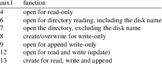
Note that mode 9 does not waste a sector, unlike the Dos 2.0S implementation. Mode 12 is the update mode, it generates an EOF condition in case it is attempted to extend the file over its initial size. Mode 13 is new and automatically extends the file over its boundary should a write past the EOF be sent. Unlike mode 9, the file pointer is positioned at the start of the file initially. Mode 6 also includes a disk title should it be provided.
For AUX2 = 128, things change dramatically. This mode provides full random access to the raw disk without any file management functions; thus, this mode allows “raw” access to disks. File names do not matter here as long as they are syntactically correct, and sectors are always 128 bytes long. The disk is understood as one big sequential file starting at sector one and extending to its last sector. Access to sectors is provided by means of the POINT/NOTE commands. The following open modes are available for AUX1 = 128:
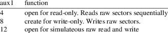
CMD 5: GET RECORD
The standard CIO record reading command. Reads bytes until the record is full or an EOL is detected.
CMD 7: GET CHARACTERS
Reads characters into the buffer until either the buffer is full or an EOF condition is reached. The FMS tries to bypass CIO, i.e. it tries to “burst” to speed up processing.
CMD 9: PUT RECORD
Writes bytes to the file/disk until either the buffer becomes empty, and EOL is found in the buffer or an EOF condition is generated.
CMD 11: PUT CHARACTERS
Writes characters to the file until the buffer becomes empty or an EOF condition is generated. This command also implies bursting, if possible.
CMD 12: CLOSE
Closes the file, writes the last buffer out and updates the directory unless the stream is ”raw“.
CMD 13: STATUS
This command works a little bit different than under DOS 2.0S and DOS 2.5 where it only checks the validity of a file specification and the availability of a drive. Since BASIC never supplies this information to STATUS , this command was actually unuseful in BASIC and never worked as intended.
Instead, if the channel is already open, STATUS returns the status of the last CIO operation on this specific channel, which allows now BASIC to check, for example, whether the next GET command will return an EOF by testing against the error code 3.
If the channel is still closed, works as it did for DOS 2.0S and DOS 2.5: It checks the given filespec for validity, tests wether the given disk is available and readable, and whether the file can be written to. Otherwise, appropriate error conditions are generated. If used from BASIC, STATUS should then be rather replaced by a XIO 13 command which supplies a file name.
CMD 32: RENAME
Renames files. Requires the old filespec, then a comma, and the new target file name. This command may cause several identically named files. Such files can be resolved by using the /1 through /9 file specification modifier defined below. Alternatively, this command and the next four, namely DELETE, FIND, LOCK and UNLOCK, take a non-zero aux2 value which then specifies which of the specific matches to a wildcard is to be renamed, deleted, found, locked or unlocked.
CMD 33: DELETE
Delete one or several files on the disk.
CMD 34: FIND
Resolves a wild card filespec and returns a full file name in the input buffer. This command is used by the command line interpreter (“DUP”) to resolve wild-cards.
CMD 35: LOCK
Prevents a file or several files from getting overwritten by setting their write-protecting bits.
CMD 36: UNLOCK
Removes the write-protection lock on a file or several files.
CMD 37: POINT
Places the file pointer at a given file/sector position. Unfortunately, the FMS doesn’t provide simple sequential accessing of files, but rather expects an absolute sector/byte offset in AUX3,AUX4 (sector) and AUX5 (byte), similar to Dos 2.0S. If an invalid write position is specified here, then the disk might get corrupted. Only file pointers obtained by a previous NOTE onto the same file should be passed in as arguments here.
Unlike under DOS 2.0S and DOS 2.5, POINT also works for files opened in write-only mode, i.e. mode 8, and can there be used to re-position the file pointer to some place in front of the EOF, overwriting data that has already been written. Similarly, POINT is very helpful to append to files in the update/append mode 13 when the former EOF position has been recorded by a NOTE , which then works much faster than having the file opened in append mode. The latter has to find the EOF manually, the former will place the file pointer directly at the EOF.
The POINT command is also used for absolute positioning within the disk if the corresponding stream is opened for raw mode, i.e. with AUX2 = 128.
CMD 38: NOTE
Returns the current file pointer as sector/byte offset to be used for a future POINT command. AUX3/4 contain the low/high-byte of the sector, AUX5 the sector offset.
CMD 39: INIT
Clears and initializes the disk, erasing all files, but not formatting the disk. This is a quick format for disks that have been formatted already. Optionally, a disk title can be given behind the device specification. This title will then appear in reverse video on each directory listing.
CMD 40: FIND
Similar to CMD 34 to maintain Dos 2.XL compatibility.
CMD 41: BINARY LOAD
Loads a binary file from disk, possibly initializing and running the binary. AUX2 specifies whether the loaded file shall be initialized or run. If set to 192, the file is initialized and run, 128 means “init only”, 64 just runs, but does not initialize the file, and 0 neither runs nor initializes the file. Note that Atari specified CMD 41 (and not CMD 40) for the binary load command.
CMD 42: FORMAT
Formats a disk in various sizes. If AUX1 is set to 33, then the disk is formatted in single density to 707 sectors. For AUX1 set to 34, then an enhanced density format is initiated, resulting in a 963 sector disk. All other values are reserved. This command also accepts a disk title.
CMD 43: FORMAT ENHANCED
Initiates a standard enhanced density format, independent of AUX1 and AUX2. This also accepts a disk name, similar to the above.
CMD 254: FORMAT ENHANCED
Identical to CMD 43.
FMS FILE
SPECS
The built-in FMS defines the following rules for filenames;
these rules are very close to those formulated by Dos
2.0S.
The first character must be an uppercase letter, all remaining characters must be uppercase letters or digits. A file name consists of at most eight characters, and an optional three character extender behind a dot (“.”). Three wild card-characters are understood: The question mark “?” that matches one single arbitrary character, the asterisk “*” that matches a sequence of arbitrary characters except the dot, and the dash “-” that is equivalent to the wild-card sequence “*.*” and thus matches any file.
Additionally, the FMS supports access mode modifiers that can be appended to a file name to change the behaivour of the command. These modifiers are appended behind a slash, “/”, e.g. “D:FILE/A”. The following modifiers are understood:
|
/A |
Open a file for append mode instead of write mode, i.e. change mode 8 to mode 9. Also changes the plain directory mode to the restricted directory mode that suppresses the disk name, and modifies mode 12 to mode 13. All other combinations are invalid. This modifier is useful in the FMS command line in combination with the COPY command to append one file to another. | ||
|
/D |
Changes the open mode from reading to directory reading, i.e. changes mode 4 to mode 6. This is, for example, useful in the FMS command line to print the directory by means of COPY D:-/D,P: | ||
|
/O |
Does not modify the open mode, but rather disables verify writes and uses the faster write without verify disk command. This makes writes faster at the price of possibly hiding write errors on bad disks. | ||
|
/V |
Similar to the above, though it enables verify writes. | ||
|
/N |
Only used together with the BINARY LOAD command to disable launching the program after having loaded it. | ||
|
/1../9 |
If several identically named files exist, access the n-th file of them. This access modifier allows to specify one of several identically named files as they could have been created by the Rename command. |
Note that the file spec “DOS.SYS” is not at all special for the FMS, unlike DOS 2.0S; it will refer to a standard regular file. The FMS will never ever try to write itself to disk. Thus, even the FMS can write the disk structure of Dos 2.XL fine on disk initialization, these disks will not be bootable without the ROM FMS.
FMS ERROR
CODES
The FMS generates the following error codes; Not listed here
are generic SIO errors that are generated by the Os kernel,
not by the FMS:
Error 160, IllegalUnit
The requested disk unit is not available.
Error 161, TooManyFiles
Too many files are open at once, the FMS run out of buffers.
Error 162, DiskFull
No more free store on the disk.
Error 164, FileLinkBroken
Fms structure found damaged, possibly because of an invalid POINT.
Error 165, FileNameInvalid
The file name is invalid.
Error 166, InvalidPoint
An argument to POINT was out of range.
Error 167, FileProtected
A write operation to a locked file was attempted.
Error 169, DirectoryFull
Could not create a file since the directory was filled.
Error 170, FileNotFound
The specified filespec does not exist.
Error 175, NoBinaryFile
The specified file is not a binary load file.
Error 176, BadLinkage
Found a bad sector link to sector #0, the disk structure is damaged.
Error 177, InvalidMode
The specified open mode is invalid.
Error 178, NotADosDisk
The structure of the inserted disk is not compatible to Dos 2.++.
THE COMMAND
LINE PROCESSOR (DUP)
The built-in FMS also provides a disk utility package (a
“DUP”). It is activated from BASIC via the
DOS command, or is run automatically if no cart is
found inserted.
The command line accepts commands similar to a Linux shell, except that its commands are much more restrictive. If the command entered is just a device specification, i.e. a one- or two-letter string terminated by a colon, then the active device is changed. Otherwise, the command line tries to locate the command as file on disk, as a binary, and then runs it. It does NOT append a file extender, unlike OS/A+ which would always append “.COM”. The file name is loaded and executed exactly as entered.
The full command line including the command and its arguments is placed in a 128 byte buffer at $580 where the executed binary may find it, and may parse it itself if required. The command line does not provide functions to parse this buffer.
NOTE This is not the way how Dos OS/A+ executes external commands. There was unfortunately not enough ROM space available to implement command line parsing service functions as OS/A+.
If the command
starts with a double quote, or is not found on disk, then
the command line processor tries to locate this as an
internal command. The following internal commands are
available: Optional arguments are here denoted in square
brackets, these are not part of the command syntax.
filespec is a file specification, optionally
containing wildcards, and optionally containing a device
specification separated from the file name by a colon. If no
device name is given, the curently active device in front of
the command is used.
DIR [filespec]
Lists the disk directory. If a filespec is given, only the files matching the filespec will be listed. DIR is not able to list the directory to some other device. For that, use the COPY command and a source filespec with the “/D” access modifier.
DELETE filespec
Deletes the file or files that match the filespec. Note that this command performs its work immediately and without asking further question.
RENAME filespec,newname
Renames a file or several files to a target filename on the same device. If more than one file matches the wildcard, all of them are renamed to the same target name. You can pick between various identically named files by means of the /1 to /9 modifiers, allowing you to rename some of them back.
LOCK filespec
Marks the file or files as write-protected. Any kind of write operation, or deletion of the file is then prohibited.
UNLOCK filespec
Removes the write protection again, the opposite of the above.
|
CAR |
Runs the cartridge should there be one inserted. If no cart is available, and neither any reset resident program is found, the command processor will be entered again. |
FORMAT [title]
Formats the specified disk to enhanced density, erasing all its contents. An optional disk name can be specified here that will be printed in inverse video when listing the directory contents.
CLEAR [title]
Similar to the above, this command clears the entire disk contents and installs an optional disk name. However, the CLEAR command only re-initializes an already formatted disk. By that, CLEAR is much faster than FORMAT and intended to be a quick-format.
RUN [hexaddress]
Runs a machine code program at the specified address. If no address has been given, the previously loaded command will be run, or run again.
SAVE filespec,from,to,[[,init],run]
Saves a binary file to disk, starting at the given hex address, up to the given address. An optional init and run address can be given here as well. Note that you can always append to a file, and thus extend a binary load file, by using the “/A” access modifier behind the file name.
LOAD filespec
Loads a file from disk, but does not start it. You can run this file later by means of the RUN command without additional arguments.
COPY filespec,target
Copies one or several files from one disk to the same or another disk. COPY will first read the file from the source, and will then wait for you to swap disks. If the source and the target disk are identically, just press RETURN, otherwise swap disks first. COPY will then write the target file, and might ask you again to insert the source disk if the file is too large to be read in one go, or if more than one file is to be copied.
COPY tries to avoid using user RAM contents whenever possible. Application memory that is reserved correctly by setting the Os vector APPMEMHI will be preserved, and BASIC source code will be spared. However, not all applications adjust APPMEMHI correctly, Mac/65 is such an example.
|
NEW |
will erase user memory and will make this memory available for the COPY command, i.e. you will require to swap disks less often. The NEW command is also necessary to inform some cartridges or application programs that its memory has been overwritten after performing a copy operation. This is necessary if the corresponding program does not set APPMEMHI correctly. |
FMS HINTS
AND TWEAKS
Sometimes an external command has the same name as an
internal one. In this case, the external command is prefered
to the internal one and is loaded, bypassing the internal
one. If this is undesired, place a double quote in front of
the command. This will avoid the external command
lookup.
You might have noted that the DIR command is not able to list the directory to anything but to the screen. However, the COPY command can perform a similar operation by using the /D access specifier:
COPY -/D,P:
will print out the contents of the directory by copying the contents of the directory to the printer device, though invalidating RAM contents due to the additional buffering COPY performs.
The LOAD command can be emulated by using the no-run specifier when you just want to load, but not to run an external command. Thus, LOAD foobar and foobar/N are equivalent.
FMS
BOOTSTRAP PROCESS
If the FMS is initiated by the built-in Os, and a disk is
found active and usable, the following additional bootstrap
steps take place:
FMS Configuration
The FMS tries to load and execute the binary load file D:CONFIG.SYS. This file should modify the FMS settings by writing into its configuration area. The FMS will then re-allocate buffers according to its new settings. Note that this is the only way how to modify the FMS parameters since it is ROM based.
Handler bootstrap
Next, the FMS tries to load and execute the binary file D:HANDLERS.SYS. This file should contain the bootstrap code for any additional boot-time handlers that must be linked into the system. For example, this file could load and run the 850 interface box firmware (easiest by simply calling the Os vector BOOT850, $e48f).
Command execution
Last, the FMS runs the traditional D:AUTORUN.SYS file. This is a user defined binary load file that could contain about anything the user may consider.
OS
EQUATES
In most cases, the built-in Os uses the same memory
locations as the Atari 800XL ROM, though some extensions
have been made. Note that memory cells reserved within the
XL operating system for parallel port and tape usage are
likely to be no longer in use. However, these should remain
reserved for future versions of the Atari++ operating
system.
$15 FMSTMP
Used by the FMS for various issues.
$16 DIRENTRYOFFSET
Used by the FMS to point into the directory buffer for the currently processed file.
$1a FILECOUNTER
In case a wildcard matches several files and the user specified a /1 to /9 access modifier to select one of these matches, this location records the user selection. This location stays at $ff if the FMS shall operate on all matches.
$1b FREEDIRCODE
Keeps the file number times four of the first free directory entry a new file could populate.
$43 FMSPTR
Temporary pointer variables for miscellaneous uses in the FMS. This pointer typically points to the directory entry of the currently processed file.
$45 DISKBUFFER
Points within the FMS to the VTOC buffer for the currently processed disk drive.
$47 FILEBUFFER
Points within the FMS to the file input/output buffer for the currently processed file.
$24e VECNMI
The Os jumps thru this vector in case it detects an interrupt on ANTIC’s NMI-input pin. This pin is routed to the RESET key on the 400 and 800 machines, and is open on the XL and later machines.
$2b8 OVERRUNFLAG
This flag is set by the E: handler in case the line is nearly full and the buzzer should be run.
$318 SCREENSTACK
This byte is traditionally used by SIO, and so it is by the built-in Os. It is, however, also used by the S: and E: handler to keep the stack pointer to make error handling easier.
$3f5 FMSBOOTFLAG
Specifies the FMS bootstrap modes and various other related issues as listed in the following table:
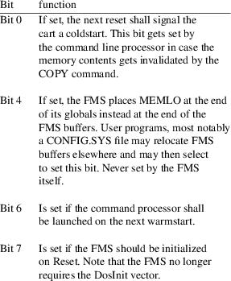
$3f6,$3f7 DUPVECTOR
DupVector (hi) This address is jumped at instead of the cart run vector during a warmstart if bit 6 of the FmsBootFlag is set. A program that jumps thru DOSVECTOR ($a,$b) will set bit 6 of the FMSBOOTFLAG, then cause a reset which in turn will run the command processor thru this vector.
The next
addresses are only used if the FMS is initialized. They can
be modified from the CONFIG.SYS file to change the FMS
parameters when booting.
$70a FMSDRIVEMASK
Contains a bitmask that defines which drives should be addressable. A one-bit enables the corresponding disk unit, a zero disables it. Bit #0 enables/disables drive 1, bit #1 controls drive 2 and so on. The default value is 3, meaning a two-disk system is supported. Each supported drive requires 128 bytes additional storage.
$709 FMSBUFFERS
Number of file buffers the FMS shall allocate. This controls how many files can be opened at once. The default value is five, allowing to open at most five files at once. Each file buffer requires 128 bytes of storage.
$779 WRITECMD
The SIO command the FMS shall use for writing sectors. This can be either $50 ("P") for writing without or $57 ("W") for writing with verify. It is however suggested to use the file name extenders "/V" and "/O" to switch between verify on and off instead.
$70C,$70D DISKBUFFERBASE
Points to the first disk buffer used by the FMS. The "CONFIG.SYS" file may change this base address to point elsewhere, in which case disk buffers will be allocated from this memory address on. If in addition bit 4 of FMSBOOTFLAG is set, the FMS init routine will neither try to increase MEMLO to point behind the FMS buffers, but will keep it at the end of its state flags.
$712,$713 FILEBUFFERBASE
This pair points to the first file data buffer within the disk buffers. It cannot be adjusted, but is always allocated by the FMS.
$700 to $7ff FMS STATE FLAGS
Addresses $700-$7ff except those above contain FMS state variables that remain undocumented.
$800 FMS BUFFERS
FMS buffers for drives and file buffers are allocated from $800 up. In the default configuration, they extend up to $a7f, leaving RAM from $a80 and up to the user. Thus, the memory footprint of the built-in FMS is much better than for DOS 2.0S. FMS buffers may be relocated by adjusting DISKBUFFERBASE accordingly by a suitable CONFIG.SYS file.
Atari++ includes an emulated Basic ROM in case an original Atari Basic ROM image is not available. The Basic dialect emulated here closely reessembles the Atari Basic dialect and is to a major degree compatible to it.
Basic++ is,
however, quite a bit faster due smarter stack and branch
handling, it is heavily bug-fixed, and slighly extended:
DIR [filenspec]
This statement lists the directory of the given drive, looking for the files that match the file specification in its argument. For example,
DIR "D2:*.*"
will list all files on the second disk drive. If no filename is given, DIR will list all files on the first disk. The DIR command is compatible both in its syntax and its internal encoding to the same TurboBasic command.
LIST [filespec,][firstline[,[lastline]]
A second notable extension is that the “lastline” argument of the list statement can be dropped while keeping the comma upfront. This instructs LIST to start listing at the line given by the first argument, but continue up to the end of the program. This extension is identical to the extension of LIST in TurboBasic. For example,
LIST 1000,
will list all lines starting from line 1000 up to the last line.
The remaining extensions are minor and consist mostly of bug-fixes, speed improvements and improvements of the numerical accuracy of the floating point model. They are described in more detail in the Basic++ manual.
Atari++ comes with a build-in mini-monitor that can be helpful for debugging programs, or for finding bugs in the emulator. The following section describes briefly the front-end and the commands of this monitor, assuming that the emulator has been compiled with curses support. Otherwise, the front-end is less user-friendly (or even more user un-friendly than it used to be before, but that is another topic).
ENTERING THE
MONITOR
The monitor is entered either by pressing F12 while
the emulation is active, by pressing ^C in the shell
that launched Atari++, or if the CPU core emulator crashes.
The crash could be either due to an instruction that is not
implemented, an instruction that would otherwise stop the
CPU completely or an unstable instruction whose function
depends on some floating bus signals that are hard or not at
all emulatable. Other than that, Atari++ emulates all known
stable “extra opcodesrq some lesser quality programs
tend to use.
Another way of entering the monitor is due to hitting a break point, or by finishing a single-stepped instruction.
MONITOR
COMMANDS
The monitor is entirely command line driven. Commands are
four characters long, non-case sensitive, with a possible
abbreviation of one character. Commands furthermore have an
optional extension given by a dot (.) and a single
additional character. This extender typically modifies the
command somewhat, or sets some parameter for the command, as
for example the output format. The extender for each command
is remembered by the command itself up to the next time the
very same command is used. Hence, you won’t need to
type the same extender every time. Using the question mark
“?” as extender lists the available extenders
for the command.
Most commands also remember the last address they operated on. If typed without arguments, they silently re-use the last address used. This is handy for disassembling long routines since you just have to re-type the disassembly command to continue the listing.
ALGEBRAIC
EXPRESSIONS
The monitor is capable of evaluating simple algebraic
expressions in C syntax containing the basic operators
+,-,*,/, the binary operators &,|,^,~ the
logical operators ||,&&,! , the comparisons
<,<=,>=,==,!= and the shifts
<<,>>. The precedence of the operators
follows mainly the C syntax except that priority of the
shifts has been “fixed” to follow more closely
the (or at least my) intuition, brackets are supported with
their obvious meaning. Furthermore, the contents of the
registers are available as the algebraic expressions
A,X,Y,P,S,PC. Otherwise, numerical constants are
understood in hex (sedecimal) notation.
If a ca65 debug file is loaded (see ENVI.S below), then labels or equates can also be used in expressions; they are then substituted by the value they have been assigned to in the debug file.
A nice gymmick are the indirection operators [],[].b,[].w with the first two being equivalent. They evaluate their contents as an address, and then return the contents of this (emulator) address as their value. The first two are byte versions reading a single byte, the latter is a word version that reads two bytes in little-endian notation to form a sixteen bit integer.
COMMAND
DESCRIPTION
The following commands are available in the monitor:
|
HELP=? |
This command prints a command summary. |
DUMP=D [expr]; extenders: A,S,V
Dumps the memory contents at the address given by the argument or continuing the last dump. The A extender switches to mixed hex-ATASCII output, emulating inverse video as much as possible thru curses, the S extender uses hex-ANTIC screen code dumps. The V extender doesn’t dump anything at all but rather sets the number of lines to dump in one go.
EDIT=E [expr]; extenders: X,D,A,S,I
Edit memory starting at the given address either in hex, decimal, ATASCII or Antic Screen codes, respectively. For hex and decimal input, memory contents are lines separated by blanks, and the input is aborted by an empty line, i.e. by just pressing RETURN. For ATASCII and screen code editing, the text given as input is placed directly in the memory of the Atari, possibly first converting to the target format. The I extender doesn’t edit any memory but toggles the seventh bit of the ATASCII resp. screen code entries on or off.
FILL=L addr size; extenders: X,D,A,S,I
Fill the given memory range, given by base address and size with a byte pattern. You will be prompted for the fill pattern separately in a second stange: With the X extender, the byte pattern is given as a space-separated list of hexadecimal (sedecimal) byte values, with the D extender, this pattern is given in decimal notation instead. Using the A extender allows to enter the bytes as ATASCII codes, and the S extender, last but not least, encodes the pattern in the ANTIC screen codes.
The I extender toggles the seventh bit of the entered ATASCII or screen code pattern on or off. Its setting is ignored for hex or decimal input.
MOVE=M from to size; extenders: S,C,A
Move a memory block of the given size from the start location to the target location. Source and target may overlap, the move command will be smart enough to copy memory blocks correctly in all circumstances. The S extender will perform a simple memory copy operation within the current address space, no matter which one has been selected by the ENVI command (see below). The C extender, however, will move bytes from the selected address space into the address space as seen from the 6502. This allows you to copy data from the ANTIC space to the CPU space. The A extender works in the reverse direction by always writing into the ANTIC space.
FIND=F [expr]; extenders: X,D,A,S,I,V
Scans the memory starting at the given location for a byte pattern, possibly filtering the pattern thru a mask. You are first prompted to enter the byte string to look for, and then for a possible mask, that must be either left blank or as long as the pattern entered first. If left blank, the byte string in memory must match the entered string precisely for a match. Otherwise, only the one-bits in the mask are significant and all zero bits in the mask are not compared against the search pattern. This allows, for example, scanning for a text in non-case-sensitive mode: Just set all pattern bytes to “5F” for ignoring case and inverse video bits.
The extenders work similar to the extenders of the EDIT or FILL commands: X expects hexadecimal input, D requests decimal input, A allows ATASCII and S screen code patterns. The pattern mask, however, is always given in hexadecimal notation. As always, the I extender toggles the seventh bit on or off for the A and S extenders. Last but not least, the V extender defines the maximal number of matches that will be printed before the search is aborted.
EVAL== expr; takes no extenders
Evaluates its argument and prints the result on the screen.
SKTB=K [expr];
Prints a stack traceback, optionally starting at the given stack address. For this option, the monitor will find the locations from which the current routine has been called. The locations of the JSR instructions are printed on the screen.
BRKP=B [expr]; extenders: S,C,D,E,A,L,V,W
Controls breakpoints. Once a breakpoint is hit, and the breakpoint is enabled, the monitor is re-entered. Breakpoints can be set in either RAM or ROM. They do not alter the memory at all but are rather emulated directly in the CPU core. Hence, they cannot interact with software reading or interpreting the code.
BRKP.S installs and activates a breakpoint at the address given by its argument. BRKP.C removes it again. The D and E extenders disable, resp. enable breakpoints that have been set before. A disabled breakpoint is temporarely turned off, but remembered, and can be turned on later on.
The V and W extenders install watch points. Unlike regular break points, the trapping condition is not execution of an instruction at a specific location, but the access of a specific memory address.
BRKP.W installs a watch point, i.e. the monitor is entered as soon as a program tries to write to the target address. Reading does not trigger it. Watch points can be disabled and removed as all other break points.
BRKP.V installs a read/write watch point that unlike the above, also reacts on read accesses to its target address.
The A extender removes all breakpoints at once and the L extender lists all breakpoints and their status, i.e. wether they are disabled or enabled.
DLST=A [expr]; extenders: L,S,V
displays the antic Display List and the ANTIC status. The L extender prints a disassembly of the ANTIC program, or short the Display List. This is useful for getting an idea how the screen is generated. The S extender prints the contents of the ANTIC register set, for example to find the start address of the display list. Finally, the V extender sets the number of lines the ANTIC disassembler prints in one go.
UNAS=U [expr]; extenders: L,V
This is the 6502 disassembler. The L extender does exactly this; it disassembles at the address given by its argument. The disassembler knows all “extra instructions” of the 6502 and prints them as four character rather than three character opcodes.
If a ca65 debug file has been (see ENVI.S below), then the disassembler automatically substitutes numeric values with the constants, labels and equates recorded in the debug file.
The V extender sets the number of lines the disassembler prints at a time.
RSET=P; extenders: W,C,I
Various reset commands. The W extender warm-starts the emulator, the C extender runs into a coldstart. Both instructions also leave the monitor as its full working environment is reset as well. If you need to debug instructions directly following the cold-start sequence, consider using the -traceonreset on command line switch.
Note that the warm-reset really holds the reset signal of the CPU. This is unlike the Reset Console Key on the Atari 800 and 400 models work; they just raise a special Antic NMI signal and leave it to the Os to detect this signal and jump to the reset vector. This kind of reset is reached with the I extender, though note that the detection of this NMI interrupt has been removed in Os ROM of the XL and XE models.
EXIT=X; no extenders
Takes no arguments and no extenders and leaves the emulator immediately.
GOPG=G; extenders: P,U,M
Takes no arguments and re-starts the emulation at the current program counter value for the P extender. Hence, this leaves the monitor and continues emulation. For the M extender, the emulation also continues, but the configuration menu is entered as soon as possible after leaving the monitor, as if F1 has been pressed. This may take as long as a vertical retrace of the emulated screen, and some code might have been run when the menu is entered. The U extender, finally, runs the program until the stack pointer gets larger than its current value. This is useful to terminate a current subroutine call and to return to the calling function immediately.
STEP=Z; extenders: S,I
Single step thru a program. If used with the S extender, the simple interface is used and similar to the GOPG command, the program is run, but the monitor is re-entered immediately after execution of the command under the PC, printing the command that was executed last. This is most useful for debugging purposes and single-stepping thru critical sections of a program.
If the I extender is selected, a full-screen graphical debugger is entered provided the curses library was available at compile time. If so, a full screen of disassembled code is printed and the monitor waits for further commands. The Z key single steps then, the N key works similar to the NEXT command (see below) and steps over subroutines and loops, the G key re-starts the program and leaves the monitor, the B key sets a break point at the current program location and, finally, the U command runs the emulated CPU until the stack pointer is increased, thus usually up to the end of the current sub-program.
NEXT=N; no extenders
Similar to STEP though this command does not step into subroutines. For any operation that places data onto the hardware stack, this command will run the program up to the location where the data is again popped from the stack; if the current instruction is not a JSR instruction, then the emulator is run until the program counter of the emulated CPU gets larger than its current value. This is for example useful to complete a larger loop with a backwards branch at its end by just one monitor command.
STAT=T [comp]; extenders: L,S
Prints status information about various system components, including internal hardware register sets, port settings and configuration. The L extender lists all system components for which a status information is available, and STAT.S followed by the name of this component prints the status of the mentioned component.
SETR=S register=expr; no extenders
Sets a CPU register to a specified value given by an expression. The syntax of this command is non-standard for convenience reasons. Register and desired register contents are separated by an equals sign, and not by a blank. For example, SETR A=ff would set the contents of the accumulator to 255=0xff.
REGS=R; no extenders
displays the contents of the CPU in a brief listing. This command is ideal for the SPLT command explained next.
SPLT=/ [cmds]; extenders: C,S
This command is special as it modifies the behaviour of the monitor and does not perform a direct action on the emulation components. The S extender splits off the top part of the monitor output window and prints there the contents of the commands following the SPLT command. For example, SPLT.S R would continously display the register dump of the 6502 CPU on top of the screen.
Several commands can be run at once by separating them with a colon. The split-off output is updated on each command, making the screen splitting an ideal feature for the single stepping and debugging. The C extender cleans and removes this split-off part of the screen again.
ENVI=V [value]; extenders: A,L,S,C
Controls various (currently one) monitor environment settings. The A extender controls the view on the memory. As the 130XE offers 128K of memory that can be selectively banked for the CPU and for ANTIC, it matters whether the memory is seen by the CPU or by ANTIC as both may have selected different banks for it. This environment switch toggles the view of the monitor onto the memory as either comming from ANTIC or from the CPU.
L This extender expects a file name as argument. The status of the emulated CPU is then logged into the file, including the register set and the timing information, i.e. horizontal and vertical beam position. Note that this file may grow very fast and becomes huge shortly. To disable logging, supply an empty file name.
S This extender loads a debug file into the monitor, which defines labels, equates and constants. This information is used by the disassembler and the expression evaluator; the former substitutes numerical values by their label names and hence makes the output of the disassembler more readable, the latter also accepts labels and equates as input and replaces them by their value. This environment setting accepts files in the “debugfile” format generated by the ca65 assembler. They are created with the --dbgfile command line option of the assembler. The ENVI.S command takes a single argument, namely the file name of the debug file to be parsed. Information in this file is then added to the internal label database of the monitor.
C This extender clears the internal label database, i.e. it forgets all label, equate and constant names that have been defined by a ENVI.S command before.
PROF=O; extenders: S,L,C,X
This monitor command controls the built-in profiler, allowing you to find performance bottlenecks in machine language programs running on the emulated 6502. The S extender starts recording profile information. After issuing this command, return to the emulator with GOPG and start and/or continue execution of the program you want to profile. Re-enter the monitor any time you want to access the collected profile data.
L lists the execution counts per memory, sorted in descending order. The first column of the profiler output lists the memory location, in hex or symbolic form, at which the profiled instruction was recorded. The next column shows the absolute count how often that location was accessed. The last column lists the percentage of how often the listed instruction has been executed compared to the overall instruction count collected by the profiler. If several consecutive instructions have exactly the same hit-count, these instructions are not listed separately, only the first instruction of the instruction block is shown. Note that this command extender lists instruction hit counts, i.e. it performs a coverage analysis, and not a cycle count analysis.
C lists the cumulative execution time of subroutines in cycles, listed in descending frequencies. Unlike the output of the L extender, this list shows the total number of cycles the CPU required to execute a subroutine, together with all the children it called. It sorts the output by cycle count, with the function taking the longest time on top. This is typically the main program. The percentage of time the code spend in a subroutine is also shown.
X This extender stops the profiler and clears the profiler database.
/etc/atari++/atari++.conf
The system global configuration files
~/.atari++.conf
The user specific configuration file
./.atari++.conf
The directory specific configuration file.
No emulator specific variables. Atari++ is controlled completely by its configuration files and command line arguments.
David Firth for his Atari800 emulator. Atari++ is not based on this earlier work, though influenced. Atari++ was entirely and completely rewritten from scratch, in C++, avoiding some of the constructional difficulties of David’s work. Especially, the way how graphics output is constructed and how player/missile graphic priorities are generated is quite different from his implementation.
Ron Fries for the Pokey emulation routine that got used in early releases of the Atari800 emulator. The strategy that has been utilized for sound build-up has been used in the pokey emulation of this emulator as well, though the implementation details are a bit different and the overall quality of the sound emulation has been improved heavily. Specifically, high-pass filters, sound muting and anti-aliasing are new to the emulation model.
Jean-loup Gailly and Mark Adler for the Z compression library that gets used if available for .gz compressed disk images.
Sam Lantinga and the SDL group for the Simple DirectMedia Layer library, or short, SDL, that offers one of the possible front-ends of the Atari++ emulator if it is available.
Jindroush and the Atari Cartridge Dumping project for providing insight into the details of the cart emulation. Specifically, SDX and XEGS cart emulation would have been impossible without him.
Petr Stehlik and the remaining atari800 team for cooperation and for working out the licencing conditions of this emulator. Specifically, I thank Petr for keeping cool in the hot days of working out all the details of making this project available.
Andreas Magenheimer and the ABBUC team for providing some hardware insight that was otherwise not available. Specifically, emulation of various bank switching logics is due to ABBUC.
Jason Duerstock’s for its analyzation of the RT8 cartridge. Unfortunately, something seems to be still not quite right with it. The current implementation in Atari++ uses a somewhat different route how the register assignment might work. This is all an educated guess, though.
B. Watson for keeping pushing me to re-implement the math-pack; it’s been done, now, providing a full free implementation of the Atari operating system.
Konrad Kokoszkiewicz for finding and fixing many bugs in the emulation of floppy disks. Part of the "speedy" comments were broken or potentially mis-interpreted, and floppy sizes weren’t detected and supported correctly under all circumstances. Thanks, folks!
Ralph "pps" for redesigning the Atari++ home page and hosting the whole project. Unfortunately, my employer can no longer host it when I moved.
"Phaeron" for documenting many undocumented chipset and CPU features and for answering all my questions. Many of the improvements made in release 1.70 are due to his work.
DE RE ATARI
by John Eckstrom, Michael A. Eckberg, Gus Makreas, Lane Winner and Elizabeth Hernaton.
Das Atari Profibuch
by Julian Reschke and Andreas Wiethoff, Sybex, 1985.
6502 Assembly Language Programming
by Lance A. Leventhal, McGraw-Hill, 1979.
Atari Technical Documentation
from The Atari Historical Society at www.atari-history.com
Your Atari Computer
by Lon Pool, Martin McNiff & Steven Cook, McGraw-Hill, 1982. German translation “Mein Atari Computer” by te-wi, 1983.
Thomas Richter (thor@math.tu-berlin.de)
An Atari800.